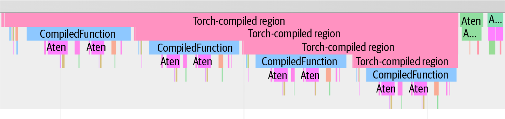
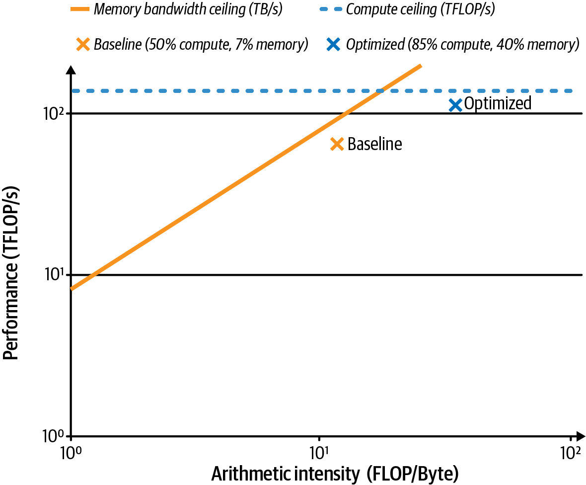
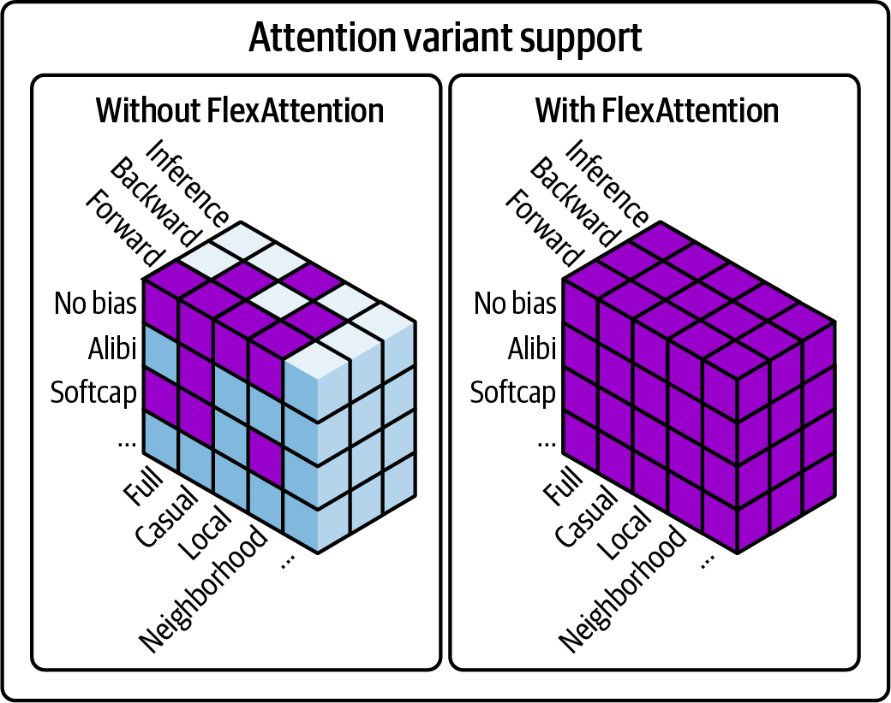
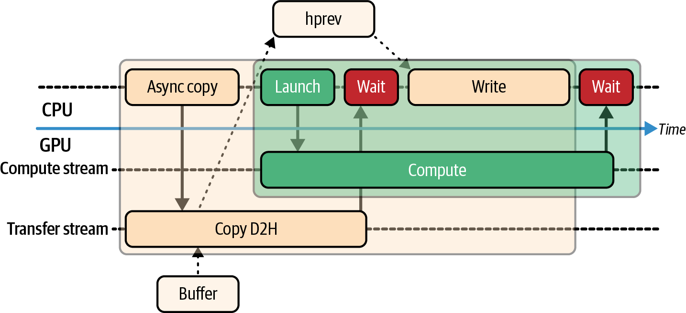
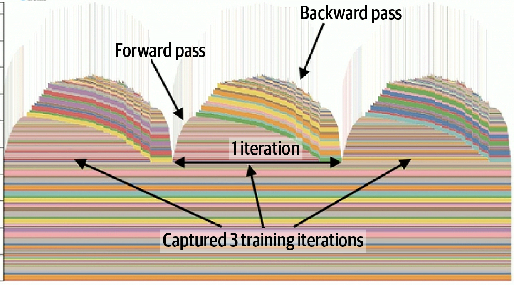
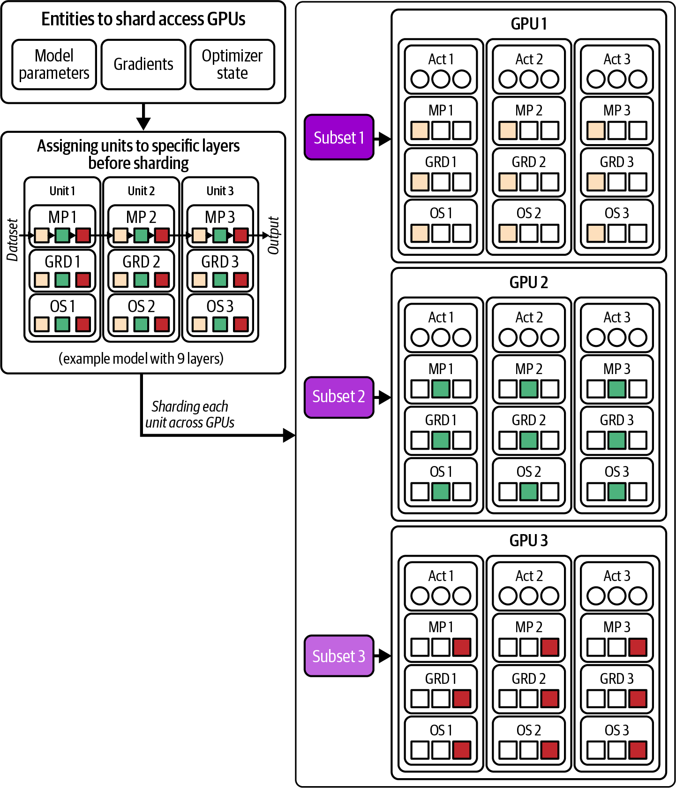
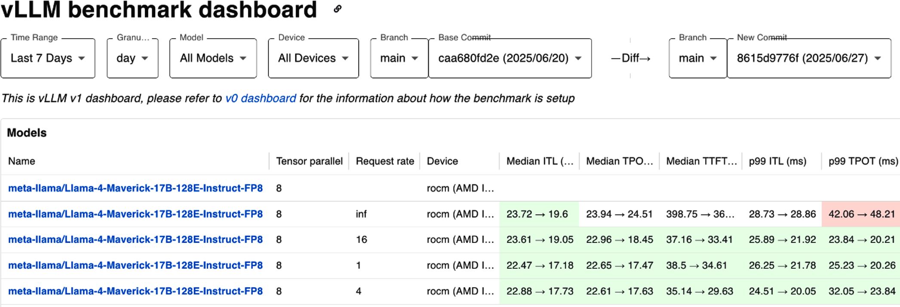

AI 训练和推理流水线的每一层都可能存在性能瓶颈，包括 Python 解释器开销、CPU 主机端数据加载停顿、CUDA 内核利用不足，以及 GPU 设备内存竞争。要有效优化，需要在整个软件栈的多个层级进行分析，并使用能够覆盖完整系统的多种工具。
本章聚焦于现代 NVIDIA GPU 上运行的 PyTorch 工作负载的性能分析、调试和系统级调优。我们将使用 PyTorch 内置分析器、NVIDIA Nsight 工具以及 Linux 的 CPU 分析工具 perf 来识别和修复瓶颈，同时讨论 PyTorch 内存分析和内存分配器调优；还会介绍 PyTorch 如何使用 CUDA stream 实现并发，以及使用 CUDA Graph 降低内核启动开销。
接下来，我们将展示如何优化数据流水线，并使用 PyTorch Distributed Data Parallel（DDP）、Fully Sharded Data Parallel（FSDP）及其他模型并行策略扩展到多个 GPU。随后还会演示如何分析多 GPU 和多节点环境，包括 Holistic Trace Analysis（HTA）和 Perfetto。
全章都将强调性能权衡和定量示例，关注内核执行时间、硬件利用率指标、内存占用、数据加载效率以及扩展的总体成本效益。读完本章后，你应能理解如何在整个软件栈上建立有效而全面的 PyTorch 工作负载分析与调优方法。
要全面了解性能，必须在多个层级进行分析，并使用覆盖整个系统的工具。业界实践者和性能工程师已经形成了一套常用工具与最佳实践，用于覆盖系统软件栈的所有层级开展整体性能分析。
在介绍工具前，需要先强调 NVIDIA Tools Extension（NVTX）和 NVTX 标记。这些标记表示性能分析器时间线视图中的时间范围，并允许不同分析器关联同一阶段的事件。
例如，"forward" 的 NVTX 区间会同时出现在 PyTorch profiler 追踪和 Nsight Systems 时间线中。这使软件栈不同层级的跨工具分析容易得多。包括 PyTorch 及 CUDA 生态相关库在内的大多数现代 AI 框架和库都支持 NVTX 标记。
可以通过 CUDA C++、PyTorch，或任何支持 NVIDIA GPU 的 C++/Python 库（如 OpenAI Triton、PyCUDA、CuPy、cuTile、cuTe、CUTLASS 等）将 NVTX 标记注入代码。大多数库已为 "train_step"、"forward"、"backward"、"optimizer_step" 等关键代码区域自动注入标记。也可以自行在 PyTorch 中使用 torch.profiler.record_function() 和 torch.cuda.nvtx.range_push() 注入它们。
既然已介绍如何使用 NVTX 标记注释代码中值得关注的区域，下面讨论可摄取、对齐并可视化这些标记的工具。常见性能分析工具及其适用范围、关键功能和典型用途汇总于表 13-1。该表可帮助你在优化历程的各个阶段选择合适工具。
| 工具 | 范围 | 功能 | 典型用途 |
|---|---|---|---|
| PyTorch 分析器（Kineto） | PyTorch 内部算子级分析（CPU/GPU） | 支持 NVTX 标记、记录张量形状、内存统计、导出轨迹，以及识别编译 graph 断点 | 细粒度拆解模型代码；识别慢算子、GPU 内核启动开销，或前向与反向时间的不均衡。 |
Nsight Systems (nsys)
|
全系统时间线（CPU、GPU、操作系统、I/O） | 统一显示 CPU 线程和 GPU stream 的时间线，集成 NVTX，支持多进程 | 端到端查看训练/推理流水线；检测数据加载器停顿、CPU-GPU 重叠问题或 GPU 间同步延迟。 |
Nsight Compute (ncu)
|
GPU 内核分析（逐个内核） | 逐内核硬件指标、源代码关联、roofline 分析、occupancy 和吞吐量报告 | 找到热点内核后深入分析其效率；判断内核为何受内存或计算限制。 |
| PyTorch 内存分析器 | 按操作统计 GPU 内存使用 | 内存快照时间线、逐操作峰值内存，以及集成 torch.cuda.memory_stats() 和 torch.cuda.mem_get_info() |
诊断内存碎片或异常高的内存使用；找出哪些操作在何时分配了最多内存，以优化内存占用。 |
Linux perf |
CPU 分析与系统事件 | 采样 CPU 周期/指令/缓存，火焰图，CPU 外（休眠）分析 | 识别 Python 开销（解释器时间、GIL 竞争）、CPU 端数据加载瓶颈或主机操作系统调度问题。 |
| Holistic Trace Analysis（整体轨迹分析） | 分布式训练轨迹可视化 | 基于浏览器的 Kineto 轨迹浏览器、多工作进程轨迹聚合；集成 Perfetto 后端 | 整体分析多 GPU/多节点执行；查找不均衡或空闲时间，并验证通信与计算是否重叠。 |
| Chrome 轨迹/Perfetto | 离线轨迹查看（基于 Web） | 标准轨迹格式的 Web 界面、高级筛选（Perfetto SQL 引擎）、便于共享轨迹 | 无需专用软件即可检查轨迹；适合性能仪表板或围绕分析数据进行远程协作。 |
| TorchEval（指标） | 模型指标与性能日志 | 标准化指标 API（吞吐量、准确率等），易于集成 | 在训练和评估中记录并监控模型吞吐量/延迟及准确率，以关联性能与模型质量。 |
| ExecuTorch | 用于移动端、嵌入式和边缘设备的部署运行时，提供轻量性能分析钩子和导出工具 | 模型导出、性能分析、调试、内存分析、可视化 | 用于运行 PyTorch 模型，并在受限平台（如移动端、嵌入式、边缘设备及 Meta 智能眼镜等）收集运行时指标。 |
下面详细介绍表 13-1中的各项性能分析工具：
在 PyTorch 中，torch.profiler 基于 Kineto 开源项目，提供 CPU 和 CUDA/GPU 运行时的算子级拆解。此外，它可以记录输入形状，并通过简单的 Python 上下文管理器获取内存快照。PyTorch 分析器利用 NVTX range 对齐事件，可在训练和推理工作负载中捕获详细的时间线轨迹和硬件计数器。它提供从 Python 代码一直到 CUDA 内核的端到端可观测性，还能针对数据加载停顿、CUDA 代码效率低等常见问题给出性能提示。
nsys)为了进行全系统关联分析（包括 CPU 线程、GPU 内核、操作系统事件、I/O 和互连流量），NVIDIA Nsight Systems 会生成统一的时间线视图。它的 GUI 和 CLI 报告可以在多进程、多节点运行中合并 NVTX 区域、Python 调用栈和 CUDA stream，从而很容易发现 I/O 或同步停顿可能影响计算性能的位置。
ncu)在 Nsight Systems 之外，NVIDIA Nsight Compute 用于逐内核分析。它会收集 occupancy、内存带宽和 SM 利用率等详细硬件指标，还能生成与源代码对应的 roofline 图，帮助分析热点内核为何缓慢。
PyTorch 还包含内存分析器，可以在 torch.profiler 中通过 profile_memory=True 启用。它会按操作拆解 GPU 内存的峰值和累计分配量，揭示可能被忽略的内存使用热点。
perf在主机端，Linux 的 perf 工具可以采样 CPU 硬件计数器（包括周期、指令和缓存未命中），并展开完整的 C/C++ 与 Python 调用图。使用 perf sched 可以查看 CPU 线程何时因 I/O、线程调度或同步而空闲，从而发现数据预处理循环、Python GIL 或同步导致 GPU 无法获得工作的瓶颈。
Meta 的开源 Holistic Trace Analysis（HTA）工具可以读取 PyTorch 分析器轨迹，帮助诊断多 GPU 瓶颈。借助 HTA，可以将带有 NVTX range 的分布式训练时间线与 CUDA 内核轨迹结合显示，并深入查看随时间变化的内存分配模式，识别 GPU 空闲时段，包括 GPU 彼此等待的情况。
要通过 Web 探索大型 PyTorch 分析器轨迹文件，可以使用 Chrome tracing（例如浏览器中的 chrome://tracing）和 Perfetto 界面。它们会加载 JSON 轨迹，让你交互式查看时间线和火焰图，还能对轨迹数据执行细粒度过滤和 SQL 查询，事件追踪与关联的粒度可达到亚毫秒级。Chrome 轨迹和 Perfetto 界面适合在组织成员之间共享分析结果，开展跨团队分析。（注意：Chrome 的旧版轨迹查看器已弃用，因此查看和分析轨迹时应优先使用 Perfetto Web 界面和 SQL 引擎。）
另一个项目 TorchEval 可以在统一界面中记录并监控模型吞吐量、延迟和质量指标，以及训练和评估指标。TorchEval 是 PyTorch 的官方指标库，提供用于端到端性能和质量指标的简单 API，便于接入训练循环并集成到分布式环境中。
对于嵌入式、移动和边缘设备，ExecuTorch 项目可以在 Meta 眼镜等轻量级运行环境中对 PyTorch 模型进行性能分析、可视化和调试。ExecuTorch 的动态内存占用较小，支持 Linux、iOS、Android 和嵌入式系统。Hugging Face 通过 Optimum ExecuTorch 项目支持 ExecuTorch；如果已经使用 Hugging Face 生态（例如 Hugging Face Transformers），就很容易集成这一环境。
下面通过一个混合专家（MoE）Transformer 模型示例，观察这些工具的实际用法。MoE 是包含多个专家层的 LLM，每个专家都是一个前馈网络；专家门控系统负责将 token 路由到不同专家。我们将运行一次训练迭代，捕获详细的性能轨迹，并分析输出结果以指导优化。
首先设置模型和输入。如下面所示，使用 Hugging Face Transformers 加载模型和 tokenizer，将模型移到 GPU，并准备一小批输入：
# train.py# Set up model and datamodel_name="..."tokenizer=AutoTokenizer.from_pretrained(model_name)device=torch.device("cuda")model=AutoModelForCausalLM.from_pretrained(model_name).to(device)optimizer=torch.optim.AdamW(model.parameters(),lr=1e-4,fused=True)batch_size=4input_texts=["MoEs are great."]*batch_sizeenc=tokenizer(input_texts,return_tensors="pt",padding=True,truncation=True)input_ids=enc.input_ids.to(device)attention_mask=enc.attention_mask.to(device)labels=input_ids.clone()# For LM training, labels are the inputs# (next-token prediction)
为了避免把一次性的初始化开销计入结果，我们在性能分析前运行几次预热迭代。这样可以通过编译 JIT 内核、填充缓存等操作让模型准备就绪，使测量的迭代更能代表稳态性能。下面是准备模型的代码：
# Warm-up (not profiled)for_inrange(5):withtorch.autocast(device_type="cuda",dtype=torch.bfloat16):outputs=model(input_ids,attention_mask=attention_mask,labels=labels)loss=outputs.lossloss.backward()optimizer.step()optimizer.zero_grad(set_to_none=True)
现在使用 PyTorch 分析器和 NVTX 分析一次训练迭代。我们将迭代包裹在 torch.profiler.profile() 中，并用 record_function 和 NVTX range 标记高层区域，包括 "forward"、"backward" 和 "optimizer_step"，如下所示：
fromtorchimportprofilerwithprofiler.profile(activities=[profiler.ProfilerActivity.CPU,profiler.ProfilerActivity.CUDA],record_shapes=True,# record tensor shapesprofile_memory=True,# track GPU memory usage per opwith_stack=True,# enable stack tracingwith_flops=True# capture FLOPs counters)asprof:withprofiler.record_function("train_step"):# Forward passtorch.cuda.nvtx.range_push("forward")withtorch.autocast(device_type="cuda",dtype=torch.bfloat16):outputs=model(input_ids,attention_mask=attention_mask,labels=labels)loss=outputs.loss# end of forwardtorch.cuda.nvtx.range_pop()# Backward pass and optimizationtorch.cuda.nvtx.range_push("backward")loss.backward()torch.cuda.nvtx.range_push("optimizer_step")optimizer.step()# end of optimizer_steptorch.cuda.nvtx.range_pop()optimizer.zero_grad()# end of backwardtorch.cuda.nvtx.range_pop()
在这段代码中，PyTorch 分析器会记录 train_step 期间的所有 CPU 和 GPU 活动。我们使用 record_function("train_step") 定义顶层区域，并为子阶段（"forward"、"backward"、"optimizer_step"）插入 NVTX 标记。这些标记会出现在分析器时间线中，用来划分迭代的不同阶段。
分析器还可以区分模型中已编译和未编译的区域。本章后面以及下一章将介绍 PyTorch Compiler、graph break 以及减轻 graph break 的机制。
例如，使用 torch.compile 时，轨迹会显示 CompiledFunction 等事件，并指出发生的 graph break（见图 13-1）。这有助于定位模型退回 eager 执行的位置，为后续优化提供依据。

执行后，可以调用 prof.key_averages().table()，按运行时间打印排名靠前算子的简明表格。在下面的代码块中，我们按 self CUDA time 对前 10 个操作排序；该指标表示操作自身 CUDA 内核所花的时间，不包括该内核生成的子操作。按 CUDA 执行时间排名前 10 的操作汇总于表 13-2：
withprofiler.profile(activities=[ProfilerActivity.CPU,ProfilerActivity.CUDA],record_shapes=True,profile_memory=True,)asprof:train_step(...)...(prof.key_averages().table(sort_by="self_cuda_time_total",row_limit=10,fields=["self_cuda_time_total","calls"]))
| 操作 | Self CUDA 总时间 | 调用次数 |
|---|---|---|
aten::matmul
|
43.00 ms | 128 |
aten::linear
|
35.50 ms | 64 |
dispatch
|
18.70 ms | 2 |
combine
|
12.10 ms | 2 |
aten::layer_norm
|
10.20 ms | 16 |
aten::softmax
|
5.70 ms | 4 |
aten::scatter
|
4.10 ms | 16 |
aten::gather
|
3.60 ms | 16 |
aten::to
|
2.90 ms | 8 |
aten::add_
|
2.20 ms | 64 |
可以看到，矩阵乘法操作（aten::matmul 及其在 aten::linear 中的使用）占据了大部分 CUDA 时间，消耗了迭代的大多数时间。这些操作对应专家前馈网络（FFN）的 GEMM。具体来说，每次迭代会调用 matmul 128 次；这是合理的，因为共有 64 个专家，每个专家在前向和反向传播中各执行一次 matmul。
从表 13-2还可以看到，接下来最大的开销来自 dispatch 和 combine 操作。这些是自定义 C++/CUDA 内核，用于将 token 重新分发给专家，再收集专家的输出。dispatch 执行两次（前向一次、反向一次），总计 18.7 ms；combine 也执行两次，总计 12.1 ms。两者合计又占用 30.8 ms 的 GPU 时间，其余时间分散在 layer norm、激活等较小操作中。
这个性能分析示例的关键结论是：专家 FFN 的 matmul 是首要瓶颈，其次是 dispatch 和 combine 内核。它们共同主导了一次训练迭代的运行时间。要进一步提升性能，应直接优化这些操作，或减少它们的调用次数。
插入的 NVTX 标记使得使用 Nsight Systems 分析时间线变得直接。为了按阶段聚合指标，可以使用带 NVTX 汇总的 nsys 分析代码，如下面的 CLI 命令所示：
nsysprofile\--output=profile\--stats=true\-tcuda,nvtx\pythontrain.py
这里，-t cuda,nvtx 选项会指示 Nsight Systems 同时追踪 CUDA API 调用和 NVTX range。分析完成后，可以在 Nsight Systems GUI 中打开 profile.nsys-rep 文件（--output=profile），也可以使用 CLI 将 NVTX 汇总打印到终端。随后可对该 profile.nsys-rep 文件使用以下命令之一生成 NVTX GPU Projection Summary，以便通过 Nsight Systems 将 range 与预计的 GPU 工作进行核验：
nsysstats--report=nvtx_gpu_proj_sum\profile.nsys-rep# ornsysrecipenvtx_gpu_proj_sum\profile.nsys-rep
可以在持续构建和集成流水线中使用其中一个命令，监控并检测性能回归。该 CLI 命令的结果汇总于表 13-3。
| NVTX range | GPU 时间（ms） | Self GPU 时间（ms） | 子 GPU 时间（ms） | 实例（调用次数） |
|---|---|---|---|---|
train_step |
138.0 | 0.0 | 138.0 | 1 |
forward
|
60.5 | 60.5 | 0.0 | 130 |
backward
|
58.3 | 58.3 | 0.0 | 130 |
optimizer_step
|
19.2 | 19.2 | 0.0 | 1 |
可以看到，train_step range 包含 forward、backward 和 optimizer 子 range。NVTX GPU 投影汇总确认 train_step 下的 GPU 总时间为 138 ms，与 PyTorch 分析器在表 13-2中给出的 forward、backward 和 optimizer_step 时间之和一致，说明不同工具之间的结果相互吻合。
虽然表 13-3显示只有一次 optimizer_step 调用，但它的 NVTX range 实际上包围了全部 64 次 aten::add_ CUDA 内核启动（如表 13-2所示，每个专家执行一次 add_），这些启动都归入同一个 optimizer_step 标记。
请注意，Nsight Systems 会将 64 次 aten::add_ 调用（例如 64 路专家并行策略）归入单个 optimizer_step 标记，因为它通过 CUDA Profiling Tools Interface（CUPTI）捕获主机端的 NVTX push/pop 事件，然后将异步 GPU 内核执行时间“投影”到这些由 CPU 定义的时间区间上。具体来说，它会累加 GPU 起止时间戳落在相应 push 和 pop 调用之间的每个内核的持续时间，得到一个累计 GPU 时间，恰好等于各个 aten::add_ 内核时间之和。
未连接分析器时，NVTX 标记的开销非常低。因此，这种投影机制很理想：几乎不增加开销，却能将 GPU 工作与高层代码区域进行端到端关联。
由于没有在 forward 和 backward 内进一步嵌套更深层的 range，它们各自的 self GPU 时间都等于总时间，因此子 GPU 时间为 0 ms。相比之下，train_step 只是嵌套阶段的外层包装器，因此几乎全部时间都计为子 GPU 时间。
NVTX GPU 投影汇总还显示，每次迭代在 train_step 内观察到 130 个 GPU 活动。这些活动包括内核启动以及内存拷贝等其他设备操作，因此并不严格与内核一一对应。
如表 13-3所示，前向和反向传播也都包含这 130 个 GPU 内核调用。操作与 NVTX 实例之间的一一对应关系表明，当前插桩捕获了所有重要操作。
表 13-3中的 NVTX 汇总提供了便捷的文本概览。进行可视化分析时，时间线 GUI 可以显示重叠的内核执行、CPU 线程状态，甚至 CUDA API 开销事件。实践中，应在可视化时间线中确认主机端数据加载和预处理与 GPU 计算发生重叠。任何较大的间隙或“气泡”都表示存在问题；用于同步的小间隙则是预期且合理的。
在多 GPU 运行中，Nsight Systems 或 HTA 的时间线视图可以显示 NVLink 或 InfiniBand/Ethernet 是否得到有效利用，也能发现某个节点是否因等待通信或网络延迟而缺少工作。这通常提示同步策略不理想或负载不均衡。
使用 Nsight Systems 和 HTA 生成轨迹时，务必追踪 GPU 通信事件，包括 NCCL all-reduce 调用以及 NVLink/NVSwitch 活动。这有助于确认在基于 NVL72 的大型 GPU 域等环境中，GPU 能持续获得工作。
细致的性能分析可以确保大型 NVLink 集群使用正确的 GPU 间同步方式并实现负载均衡。下面将聚焦系统中开销最大的内核之一：矩阵乘法，即 matmul。
为了深入分析专家 matmul 内核，使用 Nsight Compute（ncu）命令行分析器按名称定位特定 GEMM 内核。如下所示，我们将收集 roofline 相关指标，以判断其受计算还是内存限制：
ncu\--target-processesall\--kernel-name-regex"matmul"\--metrics\gpu__time_duration.avg,\gpu__dram_throughput.avg.pct_of_peak_sustained_elapsed,\lts__throughput.avg.pct_of_peak_sustained_elapsed,\sm__sass_thread_inst_executed_op_fp32_pred_on.sum,\sm__warps_active.avg.pct_of_peak_sustained_active\--csvfull\-omatmul_roofline_report\pythontrain.py
这里收集名称匹配“matmul”的所有内核的硬件计数器。具体包括几个关键指标：GPU DRAM 带宽和 L2 带宽占峰值的百分比（gpu__dram_throughput.avg.pct_of_peak_sustained_elapsed、lts__throughput.avg.pct_of_peak_sustained_elapsed）、作为计算代理的 FP32 指令数（sm__sass_thread_inst_executed_op_fp32_pred_on.sum）、内核时间（gpu__time_duration.avg）以及实际达到的 occupancy（sm__warps_active.avg.pct_of_peak_sustained_active）。
不同版本的 Nsight Compute 中，指标标识符可能略有差异。如果找不到某个指标，请使用 UI 定位当前名称并据此替换。这里分析的是 SM 和 DRAM 相对持续峰值的百分比，以及实际达到的 occupancy。
应用前文讨论的优化（例如降低精度、融合内核和提高算术强度）后，可以重新运行 ncu 命令，验证优化是否带来正面影响。表 13-4展示了提高算术强度前后的对比。
| 内核配置 | 峰值 FLOPS 占比 （SM 计算吞吐量） |
峰值内存带宽占比 （内存吞吐量） |
实际达到的 SM occupancy | 特征 |
|---|---|---|---|---|
| Baseline | 50% | 70% | 60% | 内存受限（内存传输导致停顿） |
| Optimized | 85% | 40% | 80% | 计算受限（接近硬件 roofline） |
可以看到，在基线运行中，主要 GEMM 内核只达到峰值计算 FLOPS 的约 50%、峰值内存带宽的 70%，以及中等水平的 60% SM occupancy（每个 SM 的平均活跃 warp 数）。这一 occupancy 不足以完全隐藏内存延迟。
不存在适用于所有内核的统一 occupancy 目标。许多高性能内核在实际 occupancy 为 25%–50% 时就能充分隐藏延迟。应结合 Nsight Compute 的 occupancy 指标、停顿原因拆解以及每个活跃周期的可调度 warp 数，判断提高 occupancy 是否能减少该内核的停顿。如果内核无法调度足够多的 warp 覆盖停顿时段，就会出现空闲周期，因为内存请求未能及时得到处理。
基线指标表明该内核受内存限制，因为执行会因内存传输而停顿。这造成大量计算能力未被利用，进一步说明该工作负载目前不是计算受限。目标是让内核更多地转为计算受限，以利用 GPU 提供的大量 FLOPS。
在优化版本中（例如融合内核、提高算术强度并减少内存移动），峰值 FLOPS 占比提升到 85%，峰值内存带宽占比降至 40%，occupancy 提升到 80%。这实际上将内核从内存受限转为计算受限，使其更接近硬件 roofline 上限，如图 13-2所示。

到目前为止，性能分析主要聚焦于 GPU 性能。同样重要的是不要让 CPU 或 I/O 浪费时间。下一节将转向主机端继续分析。
为了全面了解主机和设备分别消耗了多少时间，可以使用 Linux perf 分析 CPU 周期、缓存未命中、分支未命中等指标。然后根据这些信息制定一系列优化，逐项应用并测量改善效果。
首先运行轻量级的 perf stat，收集 MoE 训练期间的 CPU 端统计信息。示例节点配有基于 ARM 的 Grace CPU 和 Blackwell GPU。下面给出 CLI 命令及示例输出：
perfstat-e\cycles,instructions,cache-misses,branch-misses\pythontrain.py
Performancecounterstatsfor'python train.py':# 0.600 CPUs utilized1,200.345msectask-clock# Approximately 2.0 GHz2,400,567,890cycles# 1.58 insn per cycle3,800,123,456instructions# 0.32% of all cache refs12,345,678cache-misses# 0.12% of all branches4,567,890branch-misses1.234567890secondstimeelapsed
perf stat 报告显示 CPU 利用率、周期、每周期指令数（IPC）以及缓存/分支未命中情况。在本次运行中，task clock 约为 1.2 秒，而测量期间只使用了单个 CPU 核心约 60%（0.600）。这是预期现象，因为主要计算工作由 GPU 完成。较低的缓存未命中率和分支未命中率表明，对于该工作负载，CPU 端的内存访问模式和分支预测相对高效。
不过，IPC 仅为 1.58，说明 CPU 的发射率远低于单个 Grace CPU 核心（ARM Neoverse V2）每周期 8 条指令的理论最大 IPC。这表明该工作负载中可能存在内存延迟、I/O 停顿或主机计算方面的低效。
还可以使用 perf record 和 perf report 进一步定位训练期间占据 CPU 执行时间最多的 Python 和 C++ 函数。下面给出相应的 CLI 命令：
perfrecord-F2000-g--call-graphdwarf-operf.data\pythontrain.py
这里使用 perf record 以 2000 Hz（-F 2000）采样，并通过指定 -g --call-graph dwarf 捕获完整的 C/C++ 与 Python 调用栈。DWARF 是 Debugging With Attributed Record Formats 的缩写，是嵌入编译二进制文件（例如 ELF 文件）中的标准调试数据格式。DWARF 输出轨迹保存到 perf.data（-o perf.data），然后使用 perf report 生成最热点调用栈及其采样百分比的汇总报告：
perfreport--stdio-n-g-iperf.data# Samples Command Shared Object Symbol# ........ ........ ................... .................................45.0%pythonpythonpy::forward<...>/src/train.py20.5%pythonpythonaten::matmul10.2%pythonpythondataloader_iter_next8.7%pythonlibnccl.soncclAllReduce5.3%pythonlibc.so.6read............
可以看到，Python 解释器的 forward 函数（训练循环的 Python 部分）占 CPU 采样的 45.0%；PyTorch 的 C++ aten::matmul 操作占 20.5%，DataLoader 迭代器的 next 函数占 10.2%，NCCL all-reduce 调用占 8.7%，I/O 读取占 5.3%。
这些百分比指出了优化投入的方向。根据这份分析结果，可以针对每个瓶颈制定具体的缓解方案，以改善系统性能：
py::forward 中占 45%）使用 PyTorch 的 JIT 编译器 torch.compile（下一节讨论）消除解释器开销，并将 Python 端操作融合为优化后的 CUDA 代码。
matmul 热点（aten::matmul 中占 20.5%）可以使用 PyTorch Compiler 优化这段代码，或将关键矩阵乘法移入自定义 CUDA C++ 内核（例如融合内核），绕过 Python，直接使用优化后的 CUDA 代码。
dataloader_iter_next 中占 10.2%）增加 PyTorch 的 DataLoader num_workers。常见建议是每个 CPU 配一个 worker，但可以通过实验找到合适的 I/O 并行度，同时避免 CPU 核心过度订阅。还应启用 persistent_workers=True，让 worker 进程跨 epoch 保持运行，避免每个 epoch 的启动开销。可以融合或并行化多个 torch.utils.data.DataPipe，以减少复杂数据流水线中的 Python 开销。
ncclAllReduce 中占 8.7%）优化多 GPU 通信。例如，通过实验调节 DDP 梯度 bucket 大小（bucket_cap_mb）。较大的 bucket 可以降低每次集合通信的开销，但在反向计算中也会更晚准备就绪；根据模型和层的时序，这可能改善或损害与反向计算的重叠，应针对具体工作负载调优。还可以考虑梯度压缩技术，或使用 NVIDIA 的 NCCL 8 位梯度压缩来减少带宽占用，但这些方法可能会对准确率造成轻微影响。
read syscalls 中占 5.3%）在 DataLoader 中使用锁页内存（pin_memory=True）和非阻塞 GPU 拷贝（.to(device, non_blocking=True)），以重叠 CPU 到 GPU 的数据传输。还可以批量读取文件，或将许多小文件打包成 Arrow、WebDataset（tar 分片）、TFRecord 或 Parquet 分块等适合大规模顺序读取的数据集格式。相比逐样本文件，应优先使用连续分片格式。预取深度较大时（例如 prefetch_factor=4 或 8），优先使用锁页主机缓冲区。结合 persistent_workers=True，计算与通信高效重叠，加载器线程可以持续工作，从大型语料库读取大量小文件时也能消除逐文件开销。
这些方法结合较大的操作系统预读和 NVMe SSD，可以提高 I/O 吞吐量。较新的文件系统和存储库（例如 NVIDIA Magnum IO）也有助于将数据高效地流水线传输到 GPU。
制定方案后，应系统地逐项应用优化并测量效果。务必逐一实现和测试，确认每项优化确实改善性能。这样可以避免多项变更相互作用而产生意外结果；隔离每项变更后，就能知道哪些调整有效、哪些无效。
如果系统安装了 NVIDIA Performance Monitoring Unit（PMU） 驱动，就可以使用 perf 将 NVIDIA 芯片互连和 fabric 计数器与 CPU 计数器一起采样。例如，NVLink-C2C 设备会在 /sys/bus/event_source/devices 下以 nvidia_nvlink_c2c* 的形式暴露。可以使用 perf list 并检查 sysfs 下的 nvidia_pmu 条目来确认是否可用。
Linux perf 对 NVIDIA PMU 的支持仅限于设备级链路和 fabric 事件，例如 Grace-Blackwell 上的 NVLink-C2C。SM 流水线、warp 停顿和内存吞吐量计数器仍只能通过 CUPTI 和 Nsight 工具获得；这些 PMU 不会暴露 SM 级内核指标。要分析 SM 利用率、occupancy 和内存吞吐量，应使用 Nsight Compute 或基于 CUPTI 的分析器。还要设置 NVreg_RestrictProfilingToAdminUsers=0，以允许非 root 用户分析 SM 级硬件计数器。
PMU 设备可用后，就可以同时收集 CPU 和 NVIDIA 事件。使用 perf list 报告的符号事件名称：
perflist|grep-invidiaperfstat-a\-envidia_nvlink_c2c0_pmu_0/cycles/\-ecycles,cache-misses\pythontrain.py
这里，NVLink-C2C PMU 上的 cycles 事件可以将 GPU 互连活动与主机 CPU 行为关联起来。下面是前述 perf stat 命令的示例输出，显示运行期间 NVLink C2C PMU 记录到了活动，同时 CPU 产生了周期和缓存未命中：
Performancecounterstatsfor'python train_deepseek_v3.py':3,567,890,123nvidia_nvlink_c2c0_pmu_0/cycles45,678,901cycles7,890,123cache-misses2.345678901secondstimeelapsed
根据 PyTorch 分析器和 Nsight 工具，初步分析显示 GPU 计算（例如专家矩阵乘法）和 GPU 通信（例如 dispatch 与 combine 操作）是主要瓶颈。不过，CPU、数据加载和 GPU 集合通信同样会影响性能；perf 可以显示慢速区域中哪些 CPU 线程和互连 PMU 处于活动状态，从而证实这一点。
要进一步查看链路和 fabric 请求计数器，可以从系统的 perf list 中选择其他 NVIDIA PMU 事件，并像前面所示那样将其添加到 perf stat 命令中。
总之，将 perf 的高层 CPU 吞吐量指标和调用图热点，与 Nsight Systems 和 Nsight Compute 的设备指标及时间线结合起来，就能建立覆盖主机和设备的完整性能图景。首先处理最大的 CPU 端瓶颈和数据停顿，然后优化 GPU 通信并调优 GPU 内核。
在 PyTorch 中，最快速的性能收益之一就是使用带有 torch.compile() 的 PyTorch 编译器。编译器栈包括 TorchDynamo、AOT Autograd 和 TorchInductor，它们可以捕获 graph、融合操作，并为目标后端（例如 NVIDIA GPU）生成高性能代码。
PyTorch Compiler 可以将许多小操作融合成更大的内核，从而消除大量 Python 解释器开销和 GPU 内核启动延迟。完成基线性能分析后，我们在模型上启用 torch.compile，观察能否轻松获得加速。下面介绍这一过程及其结果。
使用默认设置的 PyTorch compiler 非常直接，除了按下例将模型包装起来（model = torch.compile(model)）之外，无需修改代码。在底层，TorchDynamo 会追踪 Python 代码，AOT Autograd 捕获反向传播，而 TorchInductor 借助 OpenAI 的 Triton 生成 GPU 内核代码（下一章将讨论），自动产生高效的融合内核。
编译器会观察模型的前向传播，识别连续操作（例如逐元素激活、layer norm 等）的融合机会，并为这些操作以及部分反向传播生成融合内核。结果是内核启动次数显著减少，每次迭代的 CPU 开销也更低。
编译步骤确实会带来数秒的开销，大型模型甚至可能需要数分钟；但对于长时间训练或反复推理，这一成本可以摊销。幸运的是，TorchInductor 会缓存编译后的内核，后续运行无需再次承担编译成本。PyTorch 社区也在持续改进编译和启动性能，允许跨运行保存并复用编译产物。可以使用 torch.compiler.save_cache_artifacts() 和 torch.compiler.load_cache_artifacts()，在不同运行或节点之间持久化 TorchInductor 输出，从而减少长时间训练或服务启动时的开销。
一个例子是 PyTorch Mega-Cache 功能。这是一种端到端编译缓存，可以将编译后的内核保存到磁盘，并在后续运行中重新加载。借助 PyTorch Mega-Cache，可以只编译一次（例如离线编译），然后在多次训练会话之间复用优化后的内核，从而缩短启动时间。你仍能获得 TorchInductor 的 warp specialization 等内核优化收益，同时避免每次重新编译 graph。
还可以在其他计算节点上使用该编译缓存；此时必须确保各节点的 CUDA、PyTorch 和 Triton 版本兼容。
需要注意，PyTorch Compiler 在内部应用了复杂的优化技术。例如，第 10 章曾介绍 warp specialization。TorchInductor 的自动调优器会针对不同 tile 大小、内存访问模式等生成多个内核变体，并在后台应用 memory warp 与 compute warp specialization 等技术，然后自动为硬件选择最快的变体。
TorchInductor 支持在 GEMM 内核周围进行 prologue和 epilogue 融合。例如，bias-add 位于 matmul 之前；而 matmul 之后的 epilogue 包含激活、dropout 和 residual 等逐元素操作。
将这些内核 prologue 和 epilogue 操作合并到单个优化内核中，TorchInductor 可以减少内存流量、降低内核启动开销并提高 occupancy。可以通过分析器验证这一点：SM 利用率应会更高。
由于 PyTorch 提供简洁、以张量为中心的接口，而不暴露 CUDA 层面的 warp 细节，这些复杂优化对开发者完全透明。因此，虽然 PyTorch API 中看不到“memory warp”或“compute warp”标志，但这些技术确实在底层运行。代码编译后，可以从分析器指标中看到 warp specialization 的收益，包括更高的 occupancy、更少的内存延迟停顿和更高的 SM 利用率。
为了说明编译模式的收益，下面在 MoE 模型上比较 PyTorch eager 模式和编译执行。我们先测量模型在普通 eager 模式下的一次训练迭代，再使用 "max-autotune" 编译模式进行测量。代码如下，后面给出示例输出：
importtorchfromtransformersimportAutoModelForCausalLM,AutoTokenizer# ---- Setup Model ----device='cuda'model_name="..."tokenizer=AutoTokenizer.from_pretrained(model_name)model=AutoModelForCausalLM.from_pretrained(model_name).to(device)optimizer=torch.optim.AdamW(model.parameters(),lr=1e-4,fused=True)# ---- Create a dummy batch of token IDs ----batch_size=4input_texts=["MoE's are awesome!"]*batch_sizeenc=tokenizer(input_texts,return_tensors="pt",padding=True,truncation=True)input_ids=enc.input_ids.to(device)attention_mask=enc.attention_mask.to(device)labels=input_ids.clone()# for causal LM, labels = input_ids# ---- Make runs deterministic ----torch.backends.cudnn.benchmark=Falsetorch.backends.cudnn.deterministic=True# --- Eager timing ---torch.cuda.synchronize()start=torch.cuda.Event(enable_timing=True)end=torch.cuda.Event(enable_timing=True)for_inrange(iters_warmup):out=model(input_ids,attention_mask=attention_mask,labels=labels)loss=out.lossifhasattr(out,"loss")elseoutloss.backward()optimizer.step()optimizer.zero_grad(set_to_none=True)torch.cuda.synchronize()start.record()for_inrange(iters_meas):out=model(input_ids,attention_mask=attention_mask,labels=labels)loss=out.lossifhasattr(out,"loss")elseoutloss.backward()optimizer.step()optimizer.zero_grad(set_to_none=True)end.record()torch.cuda.synchronize()(f"Eager mode step time:{start.elapsed_time(end)/iters_meas:.3f}ms")# --- Compile the model (choose one mode)# enables graph treescompiled_model=torch.compile(model,mode="reduce-overhead")# Alternatives:# more tuning, longer compile# compiled_model = torch.compile(model, mode="max-autotune")# balanced# compiled_model = torch.compile(model, mode="default")# Warm-up compiledfor_inrange(iters_warmup):out=compiled_model(input_ids,attention_mask=attention_mask,labels=labels)loss=out.lossifhasattr(out,"loss")elseoutloss.backward()optimizer.step()optimizer.zero_grad(set_to_none=True)torch.cuda.synchronize()start.record()for_inrange(iters_meas):out=compiled_model(input_ids,attention_mask=attention_mask,labels=labels)loss=out.lossifhasattr(out,"loss")elseoutloss.backward()optimizer.step()optimizer.zero_grad(set_to_none=True)end.record()torch.cuda.synchronize()(f"Compiled mode step time:{start.elapsed_time(end)/iters_meas:.3f}ms")
在这个示例中，PyTorch eager 模式每次迭代约需 248 ms。预热并让编译器完成优化后，编译模式约需 173 ms。使用 "max-autotune" 的编译版本比 eager 执行快约 30%。实际加速幅度会随模型结构、batch 大小和动态形状而变化；由单个大型 GEMM 主导的稠密模型，提升可能只有 <10%。
这些收益主要来自合并大量小型 GPU 内核。MoE 架构中的 token dispatch/combine 和逐 token 激活模式经常包含这类小内核。将小操作融合成更少、更大的内核后，中间数据可以保留在寄存器、共享内存等更快的片上内存中，而不必反复与全局设备内存（HBM）交换。
对于 MoE 架构使用的高度动态 token 路由，优先选择 default 或 max-autotune-no-cudagraphs。当输入形状趋于稳定，或使用具有有限离散形状的 CUDA Graph Trees 时，再切换到 max-autotune。
在本例中，dispatch/combine、激活函数等许多小操作都被 TorchInductor 融合掉了。检查编译运行的轨迹时，会看到时间线上的 GPU 内核大幅减少；剩下的内核数量更少但运行时间略长，因为每个内核对应多个合并后、一次完成多个步骤的操作。
在大量迭代中，一次性编译开销被摊销，收益会更加明显。对编译模型执行进行分析会发现 GPU 内核启动次数大幅减少，因为 eager 模式中分开的许多操作现在已经融合在一起。
需要注意，如果稠密模型由于大型线性层而主要由一个巨大 GEMM 主导，那么使用 torch.compile 的收益可能很有限（例如 <10%）。这是因为模型很可能已经高效利用 Tensor Core，同时几乎没有可供内核融合和消除 Python 开销的空间。
但 MoE 等稀疏架构包含数百个中等规模的 matmul 操作，通常能获得显著收益，因为编译可以减少 Python 开销、降低内核启动延迟，并将多个步骤融合为优化内核。因此，与稠密模型相比，PyTorch Compiler 对 MoE 的性能提升往往更大。
除了自动算子融合，还可以将用户定义的自定义内核直接集成到 torch.compile 工作流中。这样可以兼得两者优势：一般模式交由编译器执行 graph 级优化，需要时仍保留完全控制权。
例如，可以为性能关键操作编写专用 Triton 或 CUDA 内核，并将其注册为自定义算子。模型被追踪和编译时，TorchInductor 会将其作为更大执行 graph 中的单个融合操作处理。最终得到的是：手工调优的自定义代码嵌入完全优化、由编译器管理的执行 graph。
TorchInductor 的灵活性使自定义内核也能受益于编译器对周围操作的优化（例如与相邻层融合）。实践中，这意味着可以使用自己的高性能内核，同时不牺牲 PyTorch Compiler 优化模型其余部分的能力。
总之，在训练循环中使用 PyTorch Compiler（包括 "max-autotune" 模式），通常可以用相对较少的工作在现代 GPU 上获得可观加速。可以使用 torch.profiler、Linux perf、Nsight Systems、Nsight Compute 等分析器进行全面验证。
使用 TorchInductor 等编译器后端，许多操作会自动融合成高效内核。如前所见，只需使用 torch.compile 就能以很少的工作获得可观提升。但有时自动生成的代码不如手工编写的自定义内核高效，或者某个操作根本没有被编译器捕获。这就引出了一个问题：何时应依赖编译器融合，何时应自己编写自定义 CUDA 内核？
大多数情况下，首选使用带 graph 捕获的高层 torch.compile（底层由 TorchInductor 执行）。这比编写自定义 CUDA 内核省力得多，而且通常无需专门编码就能获得足够好的性能提升。
TorchInductor 已在内部应用许多高级优化，例如逐元素操作融合、层操作合并和布局优化等。手工编写融合内核既耗时又脆弱，而编译器在大多数情况下可以自动完成这些工作。
如果模型使用了编译器处理不佳的新颖操作或模式，可能需要编写自定义内核，并将自定义算子集成到 PyTorch 中。下一章将详细介绍这一过程。
总之，性能调优时应首先尝试 torch.compile，因为它简单、通常足够且成本相对“免费”。当内置自动化不足时，再进入下一层优化：创建自定义内核。之后才考虑为剩余热点编写自定义内核，以融合某些不受支持的优化器操作或专用 attention 模式。不过，即使对于专用 attention 模式，PyTorch 也提供了 FlexAttention API（prefill）和 FlexDecoding API（decode）；在 PyTorch 中实现训练和推理用的自定义 attention 内核时，优先使用这些 API，后文将会介绍。
PyTorch 为 torch.compile 提供了多种模式，可针对不同场景调节编译器的激进程度和能力。可以使用 torch.compile(model, mode="...") 显式选择模式，包括 "default"、"reduce-overhead"、"max-autotune" 和 "max-autotune-no-cudagraphs"。每种模式都组合了不同的 CUDA Graph、自动调优和优化级别选项，汇总见表 13-5。
| 模式 | 说明 | 编译时间 | 额外内存 | 主要特征 |
|---|---|---|---|---|
default
|
均衡优化（速度较好，编译时间和额外内存较少）；包含轻量自动调优；稳定片段可能使用 CUDA Graph | 低–中 | 否 | 通用融合、基础自动调优 |
reduce-overhead
|
降低每次迭代开销（适合小 batch）；适合推理或小 batch；检测到动态形状时会自动跳过 CUDA Graph，以保证正确性 | 中 | 是（工作区缓存） | 尽可能使用 CUDA Graph 消除启动开销 |
max-autotune
|
最大化运行时性能（适合长时间运行）；编译时间较长；适合拥有大量 SM 和 GPU 内存时进行激进调优 | 高（编译较慢） | 可能（若使用 graph） | 激进的 Triton 自动调优；在 GPU 上启用 CUDA Graph |
max-autotune-no-cudagraphs
|
执行 max-autotune 的全部工作，但不捕获 CUDA Graph适合动态形状，或调试被 CUDA Graph 掩盖的问题 |
高 | 否 | 与 max-autotune 相同，但禁用 graph 以获得灵活性 |
下面详细介绍表 13-5中的各个模式：
default
未显式指定模式时，这就是默认模式。它在编译代码速度、编译时间和内存使用之间取得平衡，执行标准优化并使用默认 TorchInductor 后端。对于需要适中编译时间的大模型，或内存紧张的场景，该模式通常较合适。它包含轻量自动调优，稳定片段可能使用 CUDA Graph，整体目标是平衡速度和编译成本。
reduce-overhead
该模式重点降低 Python 和运行时开销，尤其适合小模型，或每次迭代执行次数较少的模型；在这些情况下，即使少量开销也会损害性能。它会激进地利用 CUDA Graph 消除每次迭代的启动开销，也可能为持久使用分配额外内存，例如重复使用的工作区，从而避免频繁调用 CUDA malloc/free。比如，它可能缓存大型工作张量，而不是每次迭代都重新分配。如果检测到动态形状，该模式会自动跳过 CUDA Graph 并回退到 eager，以保证正确性。
该模式可以在低延迟场景中加速推理和训练，但会消耗一些额外内存。CUDA Graph 要求 graph 的内存地址保持不变，因此只有在输入大小不变且不存在动态形状操作等特定操作时才能使用。否则 graph 会失效或需要重新编译；如果某个片段无法应用 CUDA Graph，编译器会自动回退。
max-autotune
该模式不考虑编译时间，目标是生成尽可能快的代码。它会对内核进行广泛自动调优，例如尝试矩阵乘法的多种 tiling 配置，并利用 TorchInductor 已知的各种性能优化。在现代 GPU 上，max-autotune 还会默认对稳定执行启用 CUDA Graph。
该模式的编译过程可能明显更长，大型模型可能需要数分钟。它适合只编译一次、随后多次运行模型的场景，例如长时间训练，或部署长期处理大量请求的模型。用较长的前置编译时间换取的通常是最佳运行时性能；例如自动调优后，matmul 可能针对特定 GPU 和张量形状采用最优 block 大小，优于默认启发式选择。
max-autotune-no-cudagraphs
顾名思义，该模式与 max-autotune 相同，但禁用 CUDA Graph 捕获。当 CUDA Graph 会干扰所需的运行时行为，或运行时行为与 CUDA Graph 不兼容时，这一点很重要。例如，CUDA Graph 要求静态形状和内存地址，因此不能使用变化的输入形状，也不能依赖每次迭代分配新内存。
此外，在性能测量中，CUDA Graph 可能掩盖内核启动开销，而某些基准测试并不希望这样。因此，该模式可以在不使用 CUDA Graph 的情况下实现最大程度的内核优化，保持灵活性，并便于调试 CUDA Graph 可能引入或掩盖的问题，例如依赖形状的控制流，或 graph 捕获期间分配器偶尔重新分配地址。输入大小每次迭代都变化，或需要调试可能被 CUDA Graph 掩盖的问题时，应使用该模式。
对大多数用例而言，默认模式是很好的起点，能够以最少的麻烦带来可观加速。如果模型仍不够快且可以接受更长编译时间，可以尝试 reduce-overhead 和 max-autotune，以获得可能更好的融合内核，尤其是模型由可自动调优的大型 matmul 操作主导时。max-autotune 在某些模型上也可能使延迟变差，因此务必针对具体工作负载和硬件分析不同模式。
另一方面，如果优化的是非常小的模型，或 Python 开销是瓶颈的代码片段（例如包含大量小张量操作的紧凑训练循环），使用 reduce-overhead 通过 CUDA Graph 捕获几乎消除所有内核启动运行时开销，可能获得最大收益。但要注意其约束：每次迭代的工作负载应保持一致，并符合 graph 捕获要求，包括不能改变动态形状、不能进行新的内存分配等。
max-autotune-no-cudagraphs 更像是专用选项：当输入大小变化而无法使用 graph，或希望在不考虑 graph 摊销的情况下测量原始内核性能，同时又需要最大程度内核优化时，它很有用。
无论如何，改变 PyTorch Compiler 模式后都应重新分析和测量。性能工程不存在适用于所有场景的单一模式。此外，选择模式时应监控内存使用；使用 CUDA Graph 的模式会分配较大的静态缓冲区，增加内存占用。
在内存极度受限的场景中，可以优先使用这一无 graph 模式，避免 CUDA Graph 的额外内存开销。下面将讨论如何检查编译器的行为，包括它创建了一个 graph 还是多个 graph，以及是否使用了 CUDA Graph 等。
对于包含大量相同 block 的模型（例如 Transformer 和 MoE），可以使用区域编译减少冷启动执行时间，同时降低反复重新编译的开销，而不牺牲内核融合能力。
具体来说，区域编译只编译一次重复 block（例如 Transformer block），然后在所有出现位置复用代码，从而减少编译时间。PyTorch 通过 torch.compiler.nested_compile_region() 支持区域编译；该 API 将某个 block 标记为嵌套编译区域，该区域首次运行时编译，后续运行复用。
区域编译还会保持正确性。如果编译器检测到新的输入条件（shape、dtype、device、stride、globals），就会透明地重新编译该区域。
区域编译适合重视启动延迟的推理引擎和短任务，也适合 graph 经常失效的场景。区域编译代码的性能与完整编译代码的吞吐量相近。
使用 torch.compile 时，需要知道如何调试编译器无法优化模型某部分的情况，例如某些操作未被融合，怀疑 graph break 导致回退到 eager 执行。PyTorch 提供了检查这些情况的工具。
现代 PyTorch 版本通过 shape guard 部分支持动态形状，可以消除一些不必要的 graph break。但真正动态的工作负载仍可能需要回退到 eager，或使用 max-autotune-no-cudagraphs，以确保正确性。
torch._dynamo.explain(model) 会打印 graph break 报告，包括发生 graph break 的原因，以及模型中未被 TorchDynamo 捕获的部分。它还会列出未被捕获、必须在速度更慢的 Python eager 模式中执行的操作或数据相关控制流。
graph break 的常见原因是模型包含不支持的操作。Dynamo 的 explain() 输出会建议如何获取更多细节并诊断问题。利用这些提示可以定位导致 break 的确切操作或控制流。
另一种有用方法是在运行脚本前设置环境变量 TORCH_LOGS="+dynamo" 或 TORCH_LOGS="+dynamo,+inductor"。前缀 + 会为 torch.compile 流程中的 TorchDynamo、TorchInductor 等组件启用详细（DEBUG 级别）日志。详细日志包括 graph break、回退到 eager 模式以及编译阶段等信息。如果模型使用 torch.compile 后异常缓慢，这些日志可以帮助定位执行何时、何处退出了编译 graph。
如果模型包含无法在编译时解析的真正动态形状或动态控制流，可能需要引导编译器。例如，将模型拆成可编译的片段，让真正动态的部分留在 Python 中执行。
要分析和基准测试 TorchInductor 生成的内核，可以指定环境变量 TORCHINDUCTOR_UNIQUE_KERNEL_NAMES=1 和 TORCHINDUCTOR_BENCHMARK_KERNEL=1。设置后，Inductor 会为生成的内核模块生成基准测试 harness 代码；该 harness 产生的日志有助于定位意外的 graph break 和性能问题。
还可以将部分代码标记为 torch._dynamo.mark_dynamic(tensor, dim)，让编译器知道应预期动态形状。这可以消除因形状不匹配导致的不必要 graph break。下一章深入介绍 PyTorch Compiler 时会详细讨论这些技术。
总之，当 torch.compile 没有带来预期加速时，可以结合编译器日志使用 torch._dynamo.explain()，识别导致回退的操作或代码区域。然后可以采用替代操作、以不同方式重塑张量、接受较低的动态性，或只对模型的特定部分禁用编译等变通方案。这样既保留模型大部分区域的性能收益，也能处理边缘情况。
Transformer 模型会在 attention 机制上花费大量时间。可以应用多种 PyTorch attention 优化技术，避免 attention 成为瓶颈。下面快速总结几种技术及其适用时机：
PyTorch 的高层 API torch.nn.functional.scaled_dot_product_attention（即 SDPA）会自动为指定硬件选择最快的可用 attention 内核（例如 FlashAttention）。当模型的 attention 模式和 dtype 得到所选后端（Flash、memory-efficient 或 math）支持时，使用它即可轻松获得加速；如果不支持，则回退到标准 attention 实现。
这是一种基于编译器的 attention 自定义稀疏模式方法。FlexAttention 可以针对特定稀疏 attention 模式（例如块稀疏或滑动窗口 attention）生成优化内核，从而显著加速，如图 13-3所示。对于 scaled_dot_product_attention 不支持的特殊情况，应使用 FlexAttention。

FlexDecoding 是 FlexAttention 的对应方案，用于优化解码或文本生成阶段。FlexDecoding 可与 torch.compile 和动态缓存布局集成，在序列生成的 decoder 侧进行编译时优化，包括跨时间步高效使用 KV cache。它通过减少解码期间的冗余计算来加速自回归生成，面向 LLM 推理工作负载（包括长序列生成），不会改变训练时的 attention 语义。
Context Parallel 沿序列长度维度在参与的设备或 rank 之间切分 attention，以扩展上下文长度。使用 context_parallel() API，可以在指定作用域内将 scaled_dot_product_attention 替换为支持上下文并行的内核。该机制按序列在各 rank 之间切分 query-key-value（QKV），并在 attention 期间同步，而不是在单个 GPU 的线程之间并行化 attention。
PyTorch Architecture Optimization（torchao）将量化、稀疏、剪枝及相关数值调试工具集中到同一个命名空间中。其量化子包（torchao.quantization）提供常用的 FX graph 模式工作流，包括训练后量化（PTQ）、量化感知训练（QAT）以及 QConfigMapping API，用于将模型转换并优化到 INT8、FP8 和新兴格式。
除量化外，torchao 还支持剪枝（torchao.pruning）以及 2:4 和块稀疏等稀疏技术（torchao.sparsity），可以在准确率损失很小的情况下显著加速。
torch.compile() 可与 torchao 量化框架集成。底层的 TorchDynamo 会将每个子模块的计算捕获为优化 graph，随后 TorchInductor 生成利用 torchao 的硬件感知内核。这能为模型训练和推理带来一致的端到端性能改善，同时保留对数值格式和内存布局的精确控制，使其适合量化等生产级性能优化。
正如前章所述，CUDA stream 支持 GPU 上操作的并发和重叠。默认情况下，PyTorch 会在设备默认 stream（stream 0）上顺序调度所有操作。不过，许多任务彼此独立，如果资源允许，GPU 可以使用多个 stream 并行执行。例如，使用独立的非默认 stream，可以将数据传输与计算重叠，或并行运行神经网络的不同分支。
请记住，现代 GPU 具有多个 DMA 拷贝引擎。为 H2D 拷贝使用独立 stream，可以在不阻塞计算的情况下实现真正并行的数据传输。这种硬件支持让 stream 并发更加有效。
在 PyTorch 中，可以使用 torch.cuda.Stream() 创建 stream。随后可以使用 Python 上下文管理器 torch.cuda.stream(stream) 在该 stream 上启动工作，或显式将操作分配给该 stream。PyTorch 会按 FIFO 顺序将操作提交到指定 stream，就像提交到默认 stream 一样。
CUDA 流的常见用途是让主机到设备（host-to-device，H2D）数据加载与 GPU 计算重叠。这有助于掩盖使用 GPU 等外部设备时、相对于主机 CPU 所产生的数据传输延迟。
例如，一个 stream 可以在默认 stream 训练当前 batch 时，将下一批输入数据从 CPU 拷贝到 GPU 内存。默认 stream 准备好处理下一批时，数据传输已经完成，GPU 可以立即处理，从而有效隐藏 I/O 延迟。下面示例使用两个 stream：默认的 compute_stream 和非默认的 transfer_stream，在 PyTorch 中重叠数据传输与计算：
# Set up streamsdevice='cuda'# for H2D data transferstransfer_stream=torch.cuda.Stream(device=device)# for computecompute_stream=torch.cuda.default_stream(device=device)# Create an iterator so we can preload "next" batchesdataloader_iter=iter(dataloader)# Preload the very first batch onto GPUfirst_batch=next(dataloader_iter,None)iffirst_batch:withtorch.cuda.stream(transfer_stream):next_inputs,next_labels=(first_batch[0].to(device,non_blocking=True),first_batch[1].to(device,non_blocking=True),)for_inrange(len(dataloader)):# 1) Wait for transfer of `next` batch to finish, then swap into compute var# Multiple copy engines allow H2D/peer copy concurrency.# Verify parallelism in Nsight Systems (Copy engines lanes)# And tracing/profiling tools (HTA, etc.)compute_stream.wait_stream(transfer_stream)inputs,labels=next_inputs,next_labels# 2) Kick off transfer of the *following* batch on the transfer_streambatch=next(dataloader_iter,None)ifbatch:withtorch.cuda.stream(transfer_stream):next_inputs,next_labels=(batch[0].to(device,non_blocking=True),batch[1].to(device,non_blocking=True),)# 3) Run forward/backward on compute_streamwithtorch.cuda.stream(compute_stream):outputs=model(inputs)loss=loss_fn(outputs,labels)loss.backward()optimizer.step()optimizer.zero_grad(set_to_none=True)
该示例使用两个 CUDA stream：专用传输 stream 进行异步主机到设备拷贝，默认计算 stream 执行模型工作。这可以隐藏 H2D 延迟，并符合 PyTorch 推荐的通信与计算重叠模式。
具体来说，模型在默认 stream 处理一个 batch 时，下一批数据已经在 transfer_stream 上传输。消费预加载 batch 前调用 compute_stream.wait_stream(transfer_stream)，可以在不设置全设备屏障的情况下保证正确顺序；.to(device, non_blocking=True) 调用则确保拷贝使用异步 DMA，不阻塞调用它的 CPU 线程。
使用 next(dataloader_iter, None) 可以显式控制传输入队与内核操作执行的时机，确保一个 batch 在传输 stream 上移动时，另一个 batch 正在计算 stream 上执行，如图 13-4所示。

此外，代码提前从 dataloader_iter 取出数据并存入 next_inputs next_labels，将 batch 加载（CPU 上的 transfer_stream）与 batch 处理（GPU 上的 compute_stream）分离。这样每个 stream 始终都有一个正在处理的 batch，使数据加载与计算解耦并最大化重叠。
使用多个 stream 时，有时需要在它们之间协调，确保一个 stream 的工作完成后，另一个 stream 才使用其结果。使用 CUDA Event 可以轻量地同步特定位置，详见第 11 章。
借助 CUDA Event，可以在一个 stream 上记录事件，让另一个 stream 等待该事件。这避免了 torch.cuda.synchronize() 的重量级全局同步，只同步处理特定事件所需的 stream。
实际上，即使在多 GPU 环境中，也可以使用 Event 同步设备间的工作：一个 GPU 在自己的设备 stream 上记录事件，另一个 GPU 在自己的设备 stream 上等待事件。这正是 NCCL 在底层处理依赖的方式。
合理使用 Event，可以尽可能让多个 GPU 保持并行工作。下面是在 PyTorch 中使用 CUDA Event 同步 stream1 和 stream2 的示例：
# Disable timing on the event since we’re using it purely for synchronization.event=torch.cuda.Event(enable_timing=False)# In first stream:withtorch.cuda.stream(stream1):kernel_launch(...)event.record()# record event at end of work in stream1# In another stream or on host:stream2.wait_event(event)# make stream2 wait until event is signaledwithtorch.cuda.stream(stream2):other_kernel_launch(...)
在这段代码中，我们在 stream1 的一段工作结束时记录 Event。之后，在 stream2 启动工作前调用 stream2.wait_event(event)，插入依赖关系，使 stream2 在 stream1 到达该位置并发出事件信号前不会执行下一个内核。Event 适合调度 stream 之间的轻量依赖，因为它避免了会阻塞所有 stream 执行的重量级全局同步。
下面回顾上一节的 PyTorch 数据加载器/重叠示例，并改用 CUDA Event 进行同步。仍使用前面的两个 stream（transfer_stream 和 compute_stream），但添加 transfer_done CUDA Event，在细粒度、事件特定的层级上同步：
importtorchdevice='cuda'# for H2D copiestransfer_stream=torch.cuda.Stream(device=device)# for computecompute_stream=torch.cuda.default_stream(device=device)# sync-only event (low overhead)transfer_done=torch.cuda.Event(enable_timing=False)# Iterator so we can preload aheaddataloader_iter=iter(dataloader)# ---- Preload first batch ----first_batch=next(dataloader_iter,None)iffirst_batch:withtorch.cuda.stream(transfer_stream):next_inputs,next_labels=(first_batch[0].to(device,non_blocking=True),first_batch[1].to(device,non_blocking=True),)# mark when H2D is donetransfer_done.record(stream=transfer_stream)for_inrange(len(dataloader)):# ---- Sync: wait for the transfer to complete ----compute_stream.wait_event(transfer_done)inputs,labels=next_inputs,next_labels# ---- Kick off next transfer ----batch=next(dataloader_iter,None)ifbatch:withtorch.cuda.stream(transfer_stream):next_inputs,next_labels=(batch[0].to(device,non_blocking=True),batch[1].to(device,non_blocking=True),)transfer_done.record(stream=transfer_stream)# ---- Compute on the compute stream ----withtorch.cuda.stream(compute_stream):outputs=model(inputs)loss=loss_fn(outputs,labels)loss.backward()optimizer.step()optimizer.zero_grad(set_to_none=True)
该示例与上一节使用相同的重叠模式，但采用 CUDA Event 实现传输 → 计算同步，而不是另一个示例中的 wait_stream() 机制。
代码仍使用 next(dataloader_iter) 提前预加载 batch，使数据传输与计算始终重叠。
不过，这里在异步拷贝入队后，立即通过 transfer_done.record(stream=transfer_stream) 在 transfer_stream 上记录 transfer_done Event，为事件记录时间点。
compute_stream.wait_event(transfer_done) 会让 compute_stream 等待拷贝完成并触发 transfer_done Event，然后消费预取 batch，并在 compute_stream 上执行计算。
实际上，Transformer 模型层之间通常存在顺序依赖，因此不能任意并行运行各层。但在 MoE 架构中，不同专家的计算彼此独立，可以在不同 CUDA stream 上并发运行。
每个专家处理输入中的不同片段，在汇合点聚合专家输出。必须确保每个专家只写入输出张量分配给自己的切片。如果两个专家意外写入重叠内存区域，就会产生竞态条件，导致结果损坏，或因专家写入顺序不确定而触发同步问题。
为避免这些问题，应使用正确的 stream 级同步（例如 stream Event），并确认专家内核之间的内存已清晰分区。通过强制分离专家执行与输出聚合，可以在不牺牲并行性的情况下保持正确性。
NVIDIA 的 Compute Sanitizer 可以检测 CUDA 代码中的并发和同步问题，包括竞态条件和死锁。还可以设置 CUDA_LAUNCH_BLOCKING=1 强制内核同步执行，通过使执行确定化来暴露顺序和依赖错误，并发现输出是否在完全生成前就被消费。
在本例中，理论上每个专家都可以运行在自己的 stream 上；如果框架扩展到多 GPU，甚至可以运行在自己的 GPU 上。此时聚合结果时需要同步，最好使用 stream Event。
流水线并行（在不同设备上的不同模型阶段之间传递 microbatch）以及服务多个推理请求，是天然受益于多 stream 的两个场景。例如在流水线并行工作流中，模型每个阶段都有自己的 stream，可并发处理不同 microbatch，同时与相邻阶段通信。
在多请求推理服务中，可以将每个请求的模型执行启动在自己的 stream 上。如果硬件资源充足，通过重叠推理计算可以提高吞吐量，但资源共享开销会增加一些单请求延迟。
总之，CUDA stream 通过重叠多个内核、阶段或请求的工作，帮助硬件释放额外性能。它们需要谨慎同步以避免竞态条件；使用得当时，可以隐藏延迟并提高 GPU 利用率。
引入并发时，建议持续分析代码。还要注意，100% 利用率的顺序执行可能比引入资源竞争的并行执行更快。不过，stream 往往能利用原本会空闲的 GPU 部分，找到合适的平衡很重要。
前面章节已经介绍，CUDA Graph 可以消除每次迭代的启动开销、降低 CPU 启动开销，并消除内核之间细小的空闲间隙。即使移除最小的空闲间隙，也能提高有效利用率并使迭代时间更稳定。下面介绍如何在 PyTorch 中使用它们。
PyTorch 提供 torch.cuda.CUDAGraph API，用于捕获和重放 CUDA Graph。一般流程是先正常运行几次迭代预热模型，初始化所需数据和分配；然后创建 CUDAGraph 对象及专用的非默认 CUDA stream，以隔离捕获过程。
使用 "reduce-overhead" 或 "max-autotune" 时，如果模型稳定，编译器会自动捕获 CUDA Graph。此时使用 PyTorch Compiler 的这些模式无需手写样板代码。如果模型每次迭代的形状不同，应考虑使用 "max-autotune-no-cudagraphs" 避免 graph 捕获，因为当前 CUDA Graph 要求静态形状。
随后在 torch.cuda.graph() 上下文中使用指定的捕获 stream 完整执行一次模型，以记录操作序列。操作捕获到 CUDA Graph 后，就可以根据需要用新输入调用 replay() 重放 graph（例如进行模型训练或推理）。
捕获 CUDA Graph 前，捕获期间使用的所有静态内存都必须预分配，最好按最大大小分配。这些缓冲区包括输入、输出和中间张量。如果捕获期间发生新的内存分配，graph 会失败，并报出类似“operation not permitted when stream is capturing”的错误。
为了减少碎片并为固定缓冲区最大化连续内存空间，可以在进入捕获块前立即调用 torch.cuda.empty_cache()。这会清除未使用的缓存内存，让分配器更有机会不受干扰地布置预留缓冲区。
频繁使用 torch.cuda.empty_cache() 会破坏分配器效率并带来长期性能成本。应将其视为捕获 graph 时的一次性安全措施，而不是日常维护工具。
请记住，PyTorch 缓存分配器支持 CUDA 异步分配器（cudaMallocAsync），可以复用固定内存地址。但这并不能绕过 CUDA Graph 不允许在 graph 内创建新分配的要求。
仍需预先分配固定大小的缓冲区，避免在 graph 内申请新内存时产生运行时错误。确保所有张量在捕获前的预热期间达到所需最大大小。后面的 graph 重放小节会进一步介绍。
必须使用专用的非默认 stream 进行 graph 捕获，以避免不应包含在 CUDA Graph 中的操作产生干扰。下面的代码展示如何使用专用 capture_stream 在 PyTorch 中捕获 CUDA Graph：
g=torch.cuda.CUDAGraph()capture_stream=torch.cuda.Stream()# Prepare static inputs and outputsstatic_input=torch.randn(batch_shape,device='cuda')static_output=torch.empty(output_shape,device='cuda')# Warm-up step on capture_stream to allocate buffers without recordingwithtorch.cuda.stream(capture_stream):tmp=model(static_input)static_output.copy_(tmp)# ensure warm-up is completecapture_stream.synchronize()# Begin graph capturewithtorch.cuda.graph(g,stream=capture_stream):tmp=model(static_input)static_output.copy_(tmp)# ensure capture is complete before using the graphcapture_stream.synchronize()
在这段代码中，首先在 GPU 上以固定形状分配 static_input 和 static_output。然后在 capture_stream 上运行一次预热迭代，确保 model(static_input) 内部所需内存已分配，并完成一次性初始化。
通过预分配输出缓冲区，并在预热和捕获阶段都使用 static_output.copy_(tmp)，代码会将结果写入固定内存区域。这样捕获的 CUDA Graph 正确、可重放且可复现，不会发生意外张量分配。
随后同步 capture_stream，确保预热步骤完全结束，再开始实际 graph 捕获。接着在同一 stream 上进入 torch.cuda.graph(...) 上下文，重新运行模型前向传播。
捕获阶段不会真正启动内核，而只是将操作记录到 CUDA Graph 对象 g 中。退出捕获块后还需再次同步，确保记录已经完成。
捕获 CUDA Graph 时，严格隔离至关重要。捕获 stream 上的操作不能受到其他 stream 活动的影响；即使另一个线程中看似无关的内核启动，也可能使捕获失效，并导致“operation not permitted when stream is capturing”等运行时错误。
如果捕获进行期间意外在其他 stream 上执行 CUDA 操作，就会出现该错误，graph 上下文会失效并触发报错。如果在捕获 stream 上启动会执行动态内存分配的内核，也可能发生同样问题，例如创建张量或在捕获期间调用 torch.empty。
务必在开始 graph 捕获前和退出捕获后都调用 capture_stream.synchronize()，确保所有操作正确记录，并使 graph 可以安全重放。前面的代码示例遵循了这一最佳实践。
捕获图后，它可在任何流（包括默认流）上重放，与用于捕获的流无关。若要触发任何依赖图完全执行结束的 CUDA 操作，必须先同步，再执行这些操作，如下所示。否则，由于图重放时异步运行，依赖图结果的 CUDA 操作可能在图完成前执行：
# replay the graph which writes to static_outputg.replay()# synchronize on the stream that is replaying the graphtorch.cuda.current_stream().synchronize()# Now it's safe to read or post-process the output(static_output)...
没有显式同步时，程序可能继续执行，错误地假设 graph 已完成并将结果写入 static_output。如果没有同步，graph 可能尚未写完，代码就会读取过期或部分写入的数据，导致非确定性行为、读取损坏、隐蔽竞态条件和死锁。
要使用新数据重放图，将新输入复制到预分配的输入张量 static_input，然后调用 g.replay()。GPU 会以这些张量的当前内容为输入，执行整个已捕获操作序列。图会将结果置于预分配输出张量（static_output）中，如下所示：
# load new data into pre-allocated input tensorstatic_input.copy_(new_batch)# execute the captured graphg.replay()# retrieve the output (clone if you plan to modify it)result=static_output.clone()
这里将 new_batch 数据加载到 static_input 的内存空间，然后调用 g.replay()。graph 使用当前 static_input 数据运行完全相同的捕获操作，并将输出写入 static_output，之后可按需使用或克隆 static_output。
建议用几个测试输入验证 graph 输出是否与普通执行一致，确认捕获成功。还要记住，不同步就不能直接打印 static_output 或调用其 .item()。如需调试，应在重放后且位于所有异步区域之外执行 result = static_output.cpu().numpy()。
由于 graph 每次都复用相同的输入、输出和内部内存分配，它会在每次迭代覆盖同一个输出张量。如果需要将输出保留到下一次迭代之后，就必须像前面的代码那样 clone() 缓冲区。因此，预热/捕获阶段的分配必须覆盖所需最大大小；graph 无法在运行中处理额外内存分配。
需要注意，使用 CUDA Graph 后，某些 PyTorch 操作要等重新捕获 graph 才会反映出来。例如，如果在 graph 外动态修改模型权重，这些更新不会生效，因为 graph 保存了自己的操作副本。因此，graph 最适合每次迭代重复相同操作的稳态循环。
此外，使用 cudaMallocAsync 为 CUDA Graph 预分配内存时，重放会复用图捕获期间预分配的相同内存地址；例如图从磁盘加载时，会复用预热期间的地址。这样，后续图重放不需要额外内存。
默认情况下，每个 CUDA Graph 实例使用自己的私有内存池。这样可以保证每个 graph 预分配自己的内存缓冲区，不与其他 graph 实例竞争；即使两个相同 graph 并发重放，也不会争用内存。
也可以通过传入 torch.cuda.graph(pool=...) 让 graph 实例共享内存池。不过，这只适用于非常特殊的情况：为了性能而有意编排相关 graph，使其复用预分配缓冲区。例如，同时运行多个不同 batch 大小（如 1、2、4、8）的推理 graph 变体时，可以让形状特化变体为 PagedAttention 复用一块大型内存分配，从而降低总体内存使用；PagedAttention 使用名为 block_tables 的变长张量。
这种方法见于 FireworksAI 的一篇博客文章。其中针对每种 batch 大小编译不同的 CUDA Graph 变体；它们不为每个 graph 创建独立内存池，而是在所有 graph 变体之间共享一个内存池。按 batch 大小递减顺序编译 graph 时，共享池中的内存可从最大变体（本例为 8）复用。较小 batch 的 graph 变体使用前一次迭代已分配的更大缓冲区，因此可支持多个 graph 变体而不使用过多 GPU 内存。
CUDA Graph 是训练和推理达到稳态峰值吞吐量的强大工具，尤其适用于 CPU 开销和内核启动波动损害性能的大规模部署。在能极快执行数千项操作的现代 GPU 上，graph 对保持设备繁忙和降低逐内核启动开销非常重要。
需要注意，除非显式禁用，PyTorch 的 torch.compile 在许多情况下会在底层使用 CUDA Graph，以降低编译模型的内核启动开销。使用 CUDA Graph 时应牢记以下要点：
记住，不能在 graph 捕获内部动态分配 GPU 内存。所需张量应像前面所示，在预热步骤中提前分配。如果 graph 需要临时缓冲区，应使用基于 cudaMallocAsync 后端、感知 graph 的 PyTorch 缓存分配器，使每次重放复用相同缓冲区地址。确保这些临时张量在捕获前的预热阶段按最大可能大小创建，提前分配所需全部内存。
捕获的 graph 不能改变操作序列、张量形状或内存大小。如果工作负载偶尔改变形状，可以捕获多个 graph（例如每种预期输入大小一个），运行时选择合适的 graph。也可以在这些迭代中禁用 graph（PyTorch Compiler 提供 max-autotune-no-cudagraphs 模式）。
CUDA 支持低层 Graph Management API，包括前章介绍的 cudaGraphExecUpdate()，允许对捕获 graph 做小幅修改。但截至本书撰写时，PyTorch 尚未暴露此 API；在 PyTorch 中，最好将 graph 视为不可变对象。
尽可能将训练循环纳入 graph，理想情况是完整的一次迭代（前向、反向、优化器步骤及 all-reduce 通信）。捕获越多，消除的 CPU 开销和启动延迟越多。
如果内存允许，还可以在一个 graph 中捕获多次迭代（包括循环展开等）。虽然 graph 会变大，但跨迭代启用更多优化，通常能提高吞吐量；代价是灵活性降低，仍值得探索和分析。
在多 GPU 环境捕获大型 graph 时，如得到支持，应使用 CUDA stream 优先级。例如，希望计算内核以更高优先级运行且不被延迟时，可以将 NCCL 调用放入低优先级 stream。Graph 捕获也会记录这些优先级。
NVIDIA 的 MLPerf 提交结果（以及内部基准）经常将整个训练步骤捕获为每次迭代一个 graph，包括前向、反向、优化器和 all-reduce 通信步骤。这样几乎消除了所有运行时开销（启动抖动等），代价是内存占用增加、灵活性降低。
Graph 捕获后，不能释放或重新分配 graph 使用的张量，也不能改变其大小。最好按预期最大 batch 大小捕获，预留略多于需求的容量，这样稍大的输入不会在后续重放时破坏 graph。
例如，最大 batch 大小为 64，但偶尔运行 96 时，可以按 batch 大小 96 捕获以确保安全。通常最好捕获最坏情况、运行更小 batch 并浪费少量内存，而不是冒 graph 失败的风险。
记得将优化器状态的大小计算在内（例如 Adam 优化器的中间缓冲区），因为它们属于模型训练 graph 的一部分。这些内容很容易被遗漏！
合理使用 CUDA Graph，可以显著加速大模型训练和推理工作负载。完成计算优化后，下面转向 PyTorch 内存优化。
前面介绍过 PyTorch Compiler；在 CUDA Graph 语境下，还应了解 PyTorch 的 CUDA Graph Trees。它由 torch.compile（尤其是 mode="reduce-overhead"）使用，为每种输入形状编译并缓存独立的静态 graph。
静态 graph 记录后，其张量维度必须保持固定。任何新的输入形状都会触发重新记录并产生新的缓存条目。为最大化缓存命中并减少 graph 捕获，建议让各次迭代的输入形状尽可能一致；形状种类越少，记录的 graph 复用越多，开销越低。
需要注意，通常不需要直接调用 CUDA Graph Trees API。指定 mode="reduce-overhead" 时，torch.compile 会为你处理这些工作。
由于 CUDA Graph 要求静态地址和稳定控制流，支持可变输入大小、batch 大小和步数的 LLM 推理很难进行完整 graph 捕获（例如采样、KV cache 增长和主机端决策等）。
对于模型训练，CUDA Graph Trees 允许多个捕获的子 graph 在前向和反向捕获之间共享一个内存池。它对推理也很有用，因为可以根据输入形状和 batch 大小动态选择子 graph，这通常称为“分段捕获（piecewise capture）”。PyTorch 利用 CUDA Graph Trees 维护各形状的分段捕获并管理共享池。
vLLM 推理引擎使用 CUDA Graph Trees 提供的分段捕获模式，为不同输入形状和 batch 大小组合支持不同 graph。第 15 章将更详细地介绍 vLLM 和推理引擎优化。
大模型可能受到 GPU 内存容量和内存带宽限制。此外，即使 HBM 容量充足，内存碎片等低效使用方式也会损害性能。可以从多个方面处理内存问题，包括内存分配器调优、激活检查点、内存卸载和输入流水线优化。
PyTorch 还在 torch.profiler 中内置了内存分析器，只需启用 profile_memory=True，如前文所示。可以用它找出分配大量内存的操作并优先处理，这一点在 PyTorch内存可视化工具生成的图 13-5中有所展示。

NVIDIA Nsight Systems 的 CUDA Memory Inspector也能帮助可视化内存碎片随时间产生的过程。利用这些工具可以指导内存分配器调优，下面将进行探讨。
PyTorch 使用 CUDA 缓存内存分配器。默认情况下，它会根据分配模式按需拆分和回收 GPU 内存块。但使用可变大小内存分配的某些工作负载模式可能导致内存碎片。
随着时间推移，GPU 内存被拆成许多不连续的空闲块时，就会发生内存碎片。即使剩余总空闲内存足够，也可能难以分配大型张量。MoE 模型尤其容易遇到此问题，因为每个 batch 路由给各专家的 token 数量可能变化，导致每个专家的输出激活张量在每次迭代中大小不同。
可变大小的内存分配会留下不均匀、碎片化的内存块，这些碎片会在训练或推理运行中累积。
为避免这种情况，应提前分配固定大小的专家输出缓冲区，并按 batch 中任一专家可能处理的最大 token 数量确定大小，然后在每次迭代复用该缓冲区。
保持缓冲区维度不变，可以避免 GPU 内存分配器随时间产生碎片。每个专家写入预分配缓冲区中的专属切片，而不是触发新分配。该方法能稳定内存使用、提高复用效率，并避免碎片导致的失败或变慢。
可以使用环境变量调整 PyTorch 分配器配置，从而调节其行为。示例如下：
exportPYTORCH_ALLOC_CONF=\max_split_size_mb:256,\roundup_power2_divisions:[256:1,512:2,1024:4,>:8],\backend:cudaMallocAsync
下面说明代码中指定的各个配置参数：
max_split_size_mb:256
该参数指示分配器保持大型空闲块完整（最大 256 MB），而不是不断将其拆成小块，有助于减少碎片。默认情况下，PyTorch 不会激进地拆分大型分配；显式设置 max_split_size_mb 可以为现代 LLM 的大型神经网络层保留大型连续空闲块。
roundup_power2_divisions:[N:M,...]
该参数控制 PyTorch CUDA 缓存分配器如何将张量大小请求分组到固定 bucket 中。它将每个“2 的幂次”范围划分为 N 个等大的子 bucket，例如请求落在 512 MB 到 1,024 MB 之间时，代码中的 512:2 会将该范围划分为 :2 个 bucket，并向上取整到 [512MB, 768 MB, 1 GB] 之一。比如在 512 到 1,024 MB 范围内，'512:2' 会将 600 MB 请求向上取整为 768 MB。应检查分配器日志，确认环境中的实际 bucket 划分。该策略可以减少内存碎片、统一分配大小并提高缓存复用率，因为相似请求会命中同一 bucket。
backend:cudaMallocAsync
指定此项会启用 NVIDIA CUDA 异步分配器作为底层内存分配机制，有助于避免内存释放事件上的同步，并改善多 worker 数据加载等多线程场景的性能。
自定义内存分配器配置可以保持更稳定、更可预测的内存使用模式。长时间运行时，可以使用 torch.cuda.memory_stats() 监控内存碎片，确保内存占用保持稳定而不会不断膨胀。
还可以在运行时使用 torch.cuda.mem_get_info() 获取空闲内存与总内存。如果分配张量数量保持不变而空闲内存下降，就说明碎片正在增加；因此该方法可以间接跟踪碎片。
对于极大模型，激活检查点（一些实践者也称为梯度检查点）是管理内存的必要技术。对于大型 LLM，如果保存反向传播所需的全部中间激活，可能会耗尽内存。
使用激活检查点时，不在前向传播期间保存供反向传播使用的中间激活，而是在反向传播需要时动态重新计算。PyTorch 提供 torch.utils.checkpoint 自动完成这一过程，只需包装模型层或层序列，其 forward 激活就不会被保存。
可以在模型中以每个 Transformer block 和每个专家前馈神经网络（FFN）层为粒度应用检查点。这样计算完每个 block 的前向输出后，无需将中间激活留在内存中；反向传播时，PyTorch 会重新运行该 block 的前向传播，为梯度计算再生激活。
不必为所有内容设置检查点，可以只关注最大层。常见策略是仅对保存大量激活的 Transformer block 设置检查点，而不处理 layer norm 和 embedding 等较小层，以最小的重计算开销获得最大的内存节省。
这种方法以增加计算换取减少内存使用。幸运的是，相对于 HBM 容量，现代 GPU 通常拥有充足 FLOPS，因此该技术很适合最新一代硬件；GPU 的额外计算余量可以承担这些重计算。
这种权衡通常是值得的。没有激活检查点时，可能需要减小输入 batch 大小或专家数量，才能适应有限的 GPU 内存；使用检查点后，则可以更轻松地将模型装入内存并保留较大的 batch。
激活检查点会使训练略微变慢，但能训练更大的模型变体并使用更大的输入 batch，否则它们可能无法装入内存。本质上，这是用 GPU 充足的计算 FLOPS 换取克服 HBM 容量限制。
除了检查点，还可以将无需持续存储在 GPU 上的部分模型参数卸载到 CPU 和 NVMe。例如，MoE 模型中访问频率较低的专家层可以卸载到 CPU 内存，仅在需要时传输到 GPU。
应将传输与计算重叠：一个层在 GPU 上运行时，异步从 CPU 或 SSD 预取下一层权重。实践中，DeepSpeed 的 ZeRO-Infinity（训练）和 ZeRO-Inference（推理）等框架可以自动完成预取。它们逐层将模型权重从 CPU 或 NVMe 流式传输到 GPU，在重叠数据传输与计算的同时最小化 GPU 峰值内存使用。
可以将这些组件固定在主机内存中，并使用 .to(device)、cudaMemcpyAsync 等异步非阻塞 DMA 调用，在其他计算运行时将其传输到 GPU，从而隐藏 CPU 拷贝带来的额外传输延迟。
NVIDIA Unified Memory 也是一种选择，尤其适用于 Grace Blackwell GB200/GB300 等 CPU 与 GPU 之间通过 NVLink-C2C 高速互连的 Superchip 系统。在这些系统中，Unified Memory 允许将很少使用的 GPU 内存页驱逐到 CPU 系统内存。
如果容量需要，操作系统甚至可能将其交换到 NVMe/SSD。NVMe 应通过普通操作系统交换作为最后手段，而不是 Unified Memory 的主要目标。
不过，Unified Memory 可能因内存分页等机制引入不可预测性。因此，为保持完全控制和可预测性能，通常更适合显式管理卸载。
GPUDirect Storage 等近期技术允许 GPU 直接读取 NVMe 驱动器。这意味着在某些情况下，模型参数可以在运行时直接从 NVMe 分页到 GPU，无需 CPU 参与。使用超大模型进行训练和推理服务时，这两者都很有用。
对于参数量达到万亿规模的更大模型，可以将组件卸载到 NVMe 存储，并按需及时交换到 GPU 内存。关键是将数据传输与计算重叠，避免阻塞训练循环。
SuperOffload 是一种专为发挥 CPU-GPU 超级芯片硬件效率而设计的卸载系统。超级芯片（如 Grace Hopper、Grace Blackwell、Vera Rubin 等）在 CPU 与 GPU 之间提供高带宽 NVLink-C2C 互连。结合共享的一致性内存地址空间，针对超级芯片优化的卸载策略与传统卸载技术相比，可显著提升速度和硬件利用率。
SuperOffload 展示了几项关键创新，包括先推测后验证（speculation-then-validation，STV）、异构优化器计算、感知超级芯片特性的数据类型转换和内存复制。下面逐一讨论。
传统卸载会等待梯度归约和全局检查完成后再更新参数；相比之下，STV 会在 GPU 执行反向传播的同时，在 CPU 上推测性地执行优化器更新，随后再验证结果，从而让这些步骤相互重叠。这可以有效减少同步停顿并提高 GPU 的总体利用率。
SuperOffload 通过异构优化器计算，在 CPU 与 GPU 之间划分优化器工作。例如，它把计算密集的张量更新交给 GPU，而由 CPU 核心处理较轻量的状态更新，如 Adam 优化器使用的动量缓冲区。这能让两类设备都保持忙碌，减少空闲周期，提高整个芯片的利用率。
由于 NVLink-C2C 在 CPU 与 GPU 之间提供高带宽，SuperOffload 可以调整张量类型转换与数据传输所采用的精度和执行位置。它将类型转换和复制更多地移到 GPU 上，借助高速的一致性互连来尽量降低 CPU-GPU 传输延迟。
此外，SuperOffload 使用了针对 CPU 优化的 Adam 变体 GraceAdam；它专为 Grace 的 ARM 可伸缩向量扩展（Scalable Vector Extension，SVE）架构设计。SVE 是 ARM A64 指令集采用的长向量架构，具体提供 32 个向量寄存器和 16 个谓词寄存器。与 SuperOffload 结合后，它们有助于提高卸载参数更新的吞吐量和能效。
PyTorch 的 FSDP 是一种分布式并行策略；在模型训练期间，它把模型参数、梯度和激活分片到多个 GPU 上。这可降低训练时的内存开销，使你能够训练大于不分片时容量上限的模型。从技术上说，FSDP 实现了 ZeRO Stage-3 策略，将模型状态分片到多个 GPU 上，如图 13-6所示。

FSDP 可以在内部自动应用激活检查点并卸载参数与梯度。只需使用 FSDP() 封装模型，再指定 activation_checkpointing_policy 和 CPUOffload 参数，如下所示：
importtorchimporttorch.nnasnnimporttorch.distributedasdistfromtorch.distributed.fsdpimport(FullyShardedDataParallelasFSDP,CPUOffload,ShardingStrategy,BackwardPrefetch,MixedPrecision)fromtorch.distributed.fsdp.wrapimporttransformer_auto_wrap_policy# Initialize distributeddist.init_process_group("nccl")torch.cuda.set_device(dist.get_rank()%torch.cuda.device_count())# Build your modelclassMyModel(nn.Module):def__init__(self):super().__init__()self.layers=nn.Sequential(nn.Linear(4096,4096),nn.ReLU(),nn.Linear(4096,4096),)defforward(self,x):returnself.layers(x)model=MyModel().cuda()# Auto-wrap transformer blocks if neededauto_wrap_policy=transformer_auto_wrap_policy(model,min_num_params=1e8,)# Wrap with FSDP + checkpointing + CPU offloadfsdp_model=FSDP(model,auto_wrap_policy=auto_wrap_policy,sharding_strategy=ShardingStrategy.FULL_SHARD,use_orig_params=True,cpu_offload=CPUOffload(offload_params=True,pin_memory=True),mixed_precision=MixedPrecision(param_dtype=torch.bfloat16,reduce_dtype=torch.bfloat16,buffer_dtype=torch.bfloat16),backward_prefetch=BackwardPrefetch.BACKWARD_PRE,activation_checkpointing_policy={nn.TransformerEncoderLayer,nn.TransformerDecoderLayer,nn.MultiheadAttention})# Setup optimizeroptimizer=torch.optim.AdamW(fsdp_model.parameters(),weight_decay=0.01)...
这里使用 transformer_auto_wrap_policy，使 FSDP 能根据 Transformer 块的结构自动对参数、梯度和优化器状态进行分片。同时通过 CPUOffload(offload_params=True) 启用 CPU 卸载。当 GPU 不需要参数和梯度时，FSDP 会透明地将二者移到 CPU，从而降低 GPU 峰值内存用量。
设置 use_orig_params=True 后，每个 FSDP 单元无需将参数扁平化便可对其进行处理。这有利于实现更好的重叠，并简化状态字典处理，从而改善内存管理和优化器兼容性。
设置 activation_checkpointing_policy 会指示 FSDP 在指定的核心 Transformer 子模块中重新计算（即重新物化）激活，以额外计算换取显著降低的峰值内存。它可以取得与手动添加 checkpoint() 封装器及自定义卸载脚本相近的大幅内存节省效果，同时无需额外的样板代码。FSDP 甚至可以处理各 GPU 批量大小不一致的情况，这对 MoE 工作负载很有用。
FSDP 还支持通过 ShardingStrategy.HYBRID_SHARD 使用混合分片策略。该策略将每个节点的参数、梯度和优化器状态分片到节点内的多个 GPU 上，同时在其他节点复制同样的分片。实质上，混合分片通常能提供高于 FULL_SHARD 的吞吐量，但代价是每个节点占用更多内存。
当互连性能尚可、但并非极快时，可以使用 HYBRID_SHARD。它在每个节点内部对参数、梯度和优化器状态进行分片，并跨节点复制这些分片。与完全分片相比，这会略微增加每节点内存用量，但可减少跨节点流量。
混合分片使你能够权衡内存与通信。例如，由于每个节点都持有一套完整的本地分片，它会比 FULL_SHARD（ZeRO Stage-3）使用更多的每节点内存，但能减少节点间通信，往往可获得更高的端到端吞吐量。如果多节点网络非常快，并且希望把每个 GPU 的内存占用降至最低，则更适合使用 FULL_SHARD。
当网络较慢或只有少量 GPU 时，可以使用 ShardingStrategy.SHARD_GRAD_OP（ZeRO Stage-2），仅在所有 GPU 间对梯度和优化器状态进行分片。此策略会在每个 GPU 上保留一份完整的参数副本。
可以配置 PyTorch，为 NCCL 梯度全归约等关键 GPU 通信操作使用专用内存分配器。通过 torch.cuda.MemPool 接入自定义分配器，可以让 NCCL 以能够利用 NVLink 复制引擎、InfiniBand 卸载或 NVIDIA SHARP 等专用硬件机制的方式分配缓冲区，从而改善通信与计算的重叠。例如，PyTorch 支持在 NVSwitch 配置上使用 NCCL 的内存分配器执行快速的零复制归约，如下所示：
importtorchimporttorch.distributedasdistfromtorch.cuda.memoryimportMemPoolfromtorch.distributed.distributed_c10dimport_get_default_group# Initialize NCCL distributed backenddist.init_process_group(backend="nccl")torch.cuda.set_device(dist.get_rank()%torch.cuda.device_count())# Get the NCCL backend object for this devicedefault_pg=_get_default_group()backend=default_pg._get_backend(torch.device(f"cuda:{torch.cuda.current_device()}"))# The backend exposes ncclMemAlloc using mem_allocatornccl_allocator=backend.mem_allocator# Create a dedicated memory pool using this allocatornccl_pool=MemPool(nccl_allocator)# Register the pool so NCCL uses it for collective gradient buffersbackend.register_mem_pool(nccl_pool)# Use the pool explicitly for NCCL operationswithtorch.cuda.use_mem_pool(nccl_pool):tensor=torch.randn(10_000_000,device="cuda")dist.all_reduce(tensor)
将 NCCL 的原生分配器（backend.mem_allocator）绑定到 torch.cuda.memory.MemPool，并使用 backend.register_mem_pool(...) 后，PyTorch 会把梯度归约缓冲区直接放在针对 NVLink、InfiniBand 和支持 NVIDIA SHARP 的硬件路由而优化的内存区域中。这样，全归约操作便可利用硬件加速，在大规模数据归约期间减少对 SM 的争用，进而提高大型多 GPU 工作负载的吞吐量。
使用第 4 章介绍的 SHARP，需要兼容的网络结构（例如支持 SHARP 的 HDR InfiniBand）。如果条件具备，为 NCCL 启用基于 SHARP 的网内聚合，可以大幅降低大型集群的全归约延迟；扩展到大量节点时值得考虑。
通过 backend.mem_allocator 使用 NCCL 原生分配器，并将其封装进 PyTorch 的 MemPool 后，梯度全归约缓冲区会分配在针对 GPUDirect RDMA 和网内 SHARP 卸载优化的内存区域中。这会使缓冲区按大页边界对齐，并可能帮助把数据传输交给专用 DMA 引擎，从而减少 SM 的参与，释放计算能力来完成更有用的计算工作。
因此，张量并行归约等 NCCL 集合操作既能受益于硬件加速，也能减少 SM 争用。这会显著提高多 GPU 同步吞吐量，并降低重叠执行的计算内核和通信内核对 SM 与复制引擎的争用，对张量并行工作负载尤其有益。
当工作负载逼近带宽上限时，这类优化会变得更加重要。例如，Blackwell 的 NVLink 5 理论上可为每块 GPU 提供最高 1.8 TB/s 的双向总带宽（每个方向约 900 GB/s）。使用专用复制引擎、SHARP 等网络硬件以及优化的内存分配器，有助于接近网络峰值吞吐量，同时释放 SM 以争取更高的计算吞吐量。
借助 torch.cuda.MemPool，还可以通过注册自定义库（共享对象，即 .so 文件）来创建自己的内存分配器。此外，同一个 PyTorch 应用中可以混用不同的 CUDA 内存分配器，如下所示：
importtorch# PyTorch main namespaceimportos# for path operations (used here for .so extensions)fromtorch.cuda.memoryimportCUDAPluggableAllocator# 1. Create a CUDAPluggableAllocator and MemPool# Build a pluggable allocator that calls into your NCCL library:# - allocator_path: path to your .so# - "ncclMemAlloc": symbol for allocation# - "ncclMemFree": symbol for deallocation# .allocator() returns a callable that matches the CUB/CUDA allocator APIallocator=CUDAPluggableAllocator("./nccl_allocator.so","ncclMemAlloc","ncclMemFree").allocator()# Wrap that allocator in a MemPool for efficient sub-allocationspool=torch.cuda.memory.MemPool(allocator)# 2. Start recording events (set a high cap for long runs)torch.cuda.memory._record_memory_history(max_entries=100000)# 3. Allocate tensors with different allocators# tensor0 uses the *default* cudaMalloc allocator# - Shape: (1024, 1024), you can change to your desired sizetensor0=torch.randn(1024,1024,device="cuda")# tensor1 uses *your* NCCL-backed allocator using MemPoolwithtorch.cuda.use_mem_pool(pool):# Inside this context, all cuda allocations go through `pool`tensor1=torch.randn(1024,1024,device="cuda")# Exiting the context restores the default allocator# tensor2 again uses the *default* cudaMalloc allocatortensor2=torch.randn(1024,1024,device="cuda")# 4. Inspect memory pool stats# Pool-specific snapshot with list of segments/blocks in usepool_state=pool.snapshot()(f"Pool segments count:{len(pool_state)}")# 5. Dump the snapshot and optionally load in the PyTorch# memory viewer tool (https://oreil.ly/tX6gA)torch.cuda.memory._dump_snapshot('memory_snapshot.pkl')# Global allocator stats (allocated/reserved, peak, counts)global_stats=torch.cuda.memory_stats()("Peak allocated bytes:",global_stats["allocated_bytes.all.peak"])# 6. Stop recordingtorch.cuda.memory._record_memory_history(enabled=None)# 7. Reset peak counters for a fresh measurementtorch.cuda.reset_peak_memory_stats()
这里，CUDAPluggableAllocator 会加载自定义 .so 文件，并绑定到指定的两个符号。MemPool 在底层 CUDA 内存分配器之上提供缓存，以提高内存分配和释放的性能。
torch.cuda.use_mem_pool(pool) 会在 Python 上下文管理器（如 with）代码块内，将此内存池用于随后发生的所有内存分配；退出上下文管理器代码块后，则恢复先前的分配器。
在多 GPU 系统中使用流水线并行时，通常希望通过尽可能快的点对点（P2P）连接，把激活直接从一块 GPU 移到下一块 GPU，避免数据绕经主机及占用 CPU 资源。当同一进程中的张量跨设备移动时，PyTorch 会自动探测并启用对等访问。若要手动确认，可以使用 torch.cuda.can_device_access_peer(i, j) 检查 GPU i 与 GPU j 之间是否支持 P2P 访问。对于自定义 C++ 操作，可以通过 CUDA 驱动 API 显式启用对等访问。
启用 P2P DMA 后，可以进行高效的直接传输，无需经由 CPU 内存；数据搬运通常由复制引擎完成，也不要求 SM 执行常规复制内核。启用后，跨 GPU 的 copy_() 和 .to() 可在拓扑与运行时支持时使用更快的对等内存路径，而无需额外的应用代码，如下所示：
dst.copy_(src,non_blocking=True)# orsrc.to(device="cuda:1",non_blocking=True)
当系统拓扑启用了 P2P 访问时，这些方法可使用相应的 CUDA 对等复制路径（例如 cudaMemcpyPeerAsync）。要让 P2P 传输正常工作，硬件拓扑必须提供支持。GB200/GB300 NVL72 机架内部使用支持 P2P 的 NVLink 和 NVSwitch，因此其机架内硬件已具备 P2P DMA 条件。
到目前为止，我们在 P2P 数据传输的语境中只讨论了多 GPU 配置。而在多节点 GPU 拓扑中，通常需要使用通过网络通信的 NCCL，底层有时会采用 GPUDirect RDMA。根据网络、插件和软件栈配置，将 UCX（Unified Communication X，统一通信 X）与 NCCL 配合使用可能改善性能。在 GB200 和 GB300 NVL72 拓扑中，NVLink 与 NVSwitch 提供机架内 P2P 路径；跨机架通信则需要通过网络结构和相应的 NCCL 网络传输插件。
若要通过 UCX 路由跨节点传输，需要安装相应的 NCCL-UCX 插件，并按照该插件及部署环境的要求设置 NCCL_PLUGIN_P2P=ucx。许多环境还需要设置 NCCL_NET=UCX，并通过 UCX_TLS 为实际网络结构选择合适的传输层。配置正确时，这可以利用硬件卸载，并改善 NVL72 机架之间 InfiniBand 网络上的流水化传输。
下面给出一份 NCCL-UCX 插件的示例配置：
exportNCCL_NET=UCXexportNCCL_PLUGIN_P2P=ucx# UCX transports vary by fabric.# These are safe defaults to start with:exportUCX_TLS=rc,self,gdr_copy,cuda_copy
如果应用需要扩展到多个节点或机架，例如训练 TB 级模型、为多个租户运行大规模 LLM 推理，或管理数据密集型流水线，那么 UCX 是一种重要的通信方案。NCCL 与合适的 UCX 网络插件和传输配置结合后，可提供支持 RDMA 硬件卸载与拓扑感知的高吞吐、低延迟跨节点通信。它是许多生产级 AI 基础设施的重要组成部分，但是否采用仍取决于网络硬件、NCCL 插件支持及现有软件栈。
简而言之，在拓扑、传输后端和实现允许的情况下，直接 P2P DMA 或采用 UCX 的网络传输可以减少中转开销，并改善通信与计算的重叠；但相对于 NCCL send/recv 的实际收益并非固定，仍需通过基准测试验证。这属于较底层的优化；如果系统具有合适的拓扑和 NVLink/NVSwitch 等专用高速互连，可能显著改善系统性能。
对称内存是一种跨 GPU 暴露分区全局地址空间的编程模型，使内核能够执行单边 put 和 get 操作。借助它，可以调用低延迟、跨 GPU 的直接访问集合操作，而无需 CPU 参与逐次握手。实质上，对称内存会分配一组可由通信组内各 GPU 直接寻址的缓冲区，应用无需显式发起逐项 P2P 复制。
使用对称内存时，可以完全在设备端执行 MoE token 重排等全互连操作。如果所用内核和通信后端均支持 CUDA Graph 捕获，整个全互连就可纳入 CUDA Graph。若采用需要主机协调或同步的全互连实现，时间线上可能出现设备到主机（D2H）间隙，并中断或阻碍 CUDA Graph 捕获；这并不是所有非对称内存集合通信实现都必然具有的行为。
可以分配对称张量，通过进程组执行会合以取得远程访问句柄，然后调用直接访问集合操作（如 all_to_all_v 和 one_shot_all_reduce）。此外，还可以启动利用远程访问句柄执行单边读写的内核。与 OpenAI Triton 和 NVSHMEM（triton.nvshmem.put()/get()）结合后，对称内存可成为自定义内核内数据传输的有力通信机制。
对于 MoE 全互连 token 重排这类细粒度、延迟敏感且希望避免主机 CPU 介入的设备端交换，可以考虑使用 PyTorch 对称内存。在后端与操作均兼容的情况下，它有助于消除由主机协调造成的设备到主机（D2H）时间线间隙，并改善 CUDA Graph 捕获。
讨论完模型的内存与计算后，下面转向数据输入流水线。GPU 空闲等待数据是效率低下的常见原因。PyTorch DataLoader 支持启动多个工作进程（以及由数据处理库使用的线程），在模型训练的同时并行加载和预处理数据，例如文本分词。对于经由离散 CPU-GPU 路径的主机到设备传输，通常应设置 pin_memory=True，让 DataLoader 返回位于页锁定（pinned）主机内存中的张量，以支持更高效的传输及异步复制。
如果不使用锁页内存，某些工作负载可能出现数据加载进程 CPU 利用率较高、而训练进程 GPU 利用率较低的现象。不过，CPU 忙碌也可能来自解码、分词或变换，不能仅凭这一现象断定锁页内存是根因。可以使用 htop 和 Nsight Systems 等工具观察：CPU 线程忙于加载或预处理数据时，GPU 是否存在相应的空闲间隙。
如果每次迭代前都有 GPU 等待数据的间隙，说明数据加载可能跟不上训练速度。可以逐步提高 DataLoader 的 num_workers，直到数据队列能及时准备足够的批次。对于受 CPU 限制的数据流水线，每块 GPU 配置 4 个 worker 是一种常见起点，但最佳数量取决于工作负载、CPU 核数、存储、NUMA 拓扑及每节点 GPU 数量。
要找到最佳数量，可以快速扫描一组候选值（如 4、8、16、32），找出继续增加 worker 已无收益的拐点。同时观察 CPU、存储带宽和内存压力；如果所有核心都已满载，增加 worker 通常不会有帮助，反而可能增加上下文切换和内存开销。
请记住，Grace Hopper、Grace Blackwell 和 Vera Rubin 等采用 NVLink-C2C 的超级芯片系统提供大容量、高带宽的 CPU-GPU 一致性内存地址空间。在这些环境中，数据访问路径及迁移机制不同于传统 PCIe 离散系统，因此 pin_memory=True 的收益可能较小，但不能仅依据互连类型预先断定。
在非一致性路径上进行可分页主机内存到设备的复制时，为了获得预期的异步传输与计算重叠，仍可能需要锁页内存。统一内存和一致性映射可能降低 NVLink-C2C 系统对锁页内存的依赖，但必须针对实际工作负载测量。
即使采用 CPU-GPU 超级芯片架构，在数据加载受 CPU 限制时，也可评估组合使用 pin_memory=True、non_blocking=True 和 persistent_workers=True。其中，persistent_workers=True 可避免每个 epoch 结束后关闭并在下一 epoch 重新创建 worker 进程，对分词密集的训练工作负载尤其有用。注意，大页不能普遍替代 CUDA 锁页内存，而 non_blocking=True 也不单独保证复制与计算重叠；应使用 Nsight Systems 验证实际执行时间线。
在具备 CPU-GPU 硬件一致性内存的系统中，处理器可通过高速一致性路径访问共享地址空间，不一定需要传统离散 GPU 路径中的显式固定与暂存。相比之下，在缺少这类硬件一致性的标准 CPU+GPU 系统上，启用 pin_memory=True 会让 DataLoader 使用页锁定主机内存，通常能改善主机到设备的传输效率，但具体收益仍取决于批次大小和流水化程度。
如果在 Grace Blackwell、Vera Rubin 等超级芯片系统上不使用锁页内存，而依赖 CPU-GPU 一致性或统一内存路径，应通过 Nsight Systems 验证数据访问或迁移是否确实与计算重叠。大页可能改善地址转换开销，但并非锁页内存的等价替代品；NVLink-C2C 改变了两者的权衡，需要实测。
提高数据加载响应能力的另一种方法，是增大 DataLoader 的 prefetch_factor。它控制每个 worker 预先加载的批次数，因此待预取的批次总数约为 prefetch_factor * num_workers。这样，当模型处理当前批次时，worker 已在加载后续批次。
预取有助于保持数据流水线充足并减少 GPU 空闲时间。应根据数据集和硬件能力联合调整 prefetch_factor 与 num_workers，并通过性能分析避免过度预取造成不必要的主机内存占用。
还可以预先完成数据集分词并将结果存储到磁盘，避免在数据加载循环中反复执行繁重处理。Hugging Face Datasets 的缓存机制和 WebDataset 等工具可让文件只预处理一次并重复使用。也可根据数据语义和精度要求，考虑使用较低精度的存储格式或压缩来降低 I/O 带宽需求。
PyTorch 生态中还有 TorchData 与 DataPipes，可组合构建数据处理流水线。其能否与训练计算重叠，取决于 DataLoader、worker、预取与执行方式，并不是由调度器自动保证。
另一个实用工具是 NVIDIA 数据加载库（DALI）。DALI 可以让 CPU 或 GPU 预处理与训练流水化执行，尤其适合图像和视频数据的解码、增强等操作，并能通过 CUDA 流水线把数据送入训练代码。对于适合卸载到 GPU 的即时数据变换，它很有用。
所有这些方法的目标，都是尽量让数据加载与 GPU 计算重叠。可以通过 Nsight Systems 确认数据加载器是否与 GPU 并行工作：时间线应显示一个或多个 CPU worker 在准备后续批次，同时 GPU stream 执行训练步骤；还应检查 GPU 是否存在等待数据的间隙。理想状态是数据输入不再成为瓶颈，但 SM 是否能接近满负荷执行有用工作，还取决于模型内核、同步、通信与批量大小等因素。
如果已经通过激活检查点和卸载缓解了内存约束，可以尝试增大每块 GPU 的输入批量。较大的批量可能提高部分算子的并行度和 GPU 利用率，并因每个 epoch 的训练步数减少而降低某些固定通信开销的相对占比；不过，算术强度是否提高取决于算子实现和数据复用，并非批量增大后必然发生。
不过，批量过大可能改变优化动态，并在超参数未相应调整时影响收敛或泛化；不能把原因简单归结为优化器必然进入尖锐极小值。显著增大批量时，还要监控 GPU 内存用量。请记住，梯度累积会增大有效批量；若各并行维度每步样本数相同，其通常还应计入数据并行规模，而不仅是 batch_size * accumulation_steps。PyTorch 的 TorchEval 指标可用于评估更大批量是否损害验证集表现。
可以相应调整超参数，尽量缓解大批量带来的训练不稳定。例如调整学习率、结合预热使用线性学习率缩放，或评估 LAMB 等大批量优化器。这些方法并非普适规则，仍需根据模型和训练配方验证。
简而言之，如果内存允许，并且前述内存优化已经实施和验证，可以尝试增大批量以改善 GPU 利用率；最终收益和收敛质量必须通过性能与训练指标共同验证。
在多个 GPU 和计算节点上扩展 PyTorch 并进行性能分析，通常会使用 PyTorch DDP、FSDP 等分布式库。PyTorch 编译器可以与这些并行方法配合使用，但其中有一些细节，下面逐一说明。
DistributedDataParallel 使用全归约集合操作在 GPU 间同步梯度。实际运行中，DDP 将梯度划分为多个 bucket，并在反向计算就绪时调度相应通信，以争取通信与计算重叠。`torch.compile` 对 DDP 的处理会依据 PyTorch 版本、优化后端和图捕获支持，在合适的边界组织反向计算与归约，而不应假定每个同步点都必然表现为用户可见的 graph break。
在某些版本的 torch._dynamo.explain(model, ...) 输出中，可能会看到与全归约或 torch.distributed 操作有关的 graph break；另一些受支持的集合操作则可能被跟踪进图中。关键是确认编译没有破坏 DDP 的 bucket 调度和通信重叠，应以实际 profiler 轨迹为准。
将 DDP 与编译器结合使用时，应合理设置 DDP bucket 大小。bucket_cap_mb 的常见默认值为 25 MiB，但具体默认值和首个 bucket 行为应以所用版本为准。如果覆盖默认值，把所有梯度放进一个巨型 bucket，通常要等更多反向计算完成后才能启动大规模全归约，从而减少交错通信与计算的机会；它并不必然对应“一个巨型编译图”。
为了减少 bucket 数量或尝试扩大编译区域，使用单一 bucket 可能很有吸引力，但这往往会牺牲通信重叠机会。应对系统进行性能分析，为具体工作负载和硬件环境寻找编译、通信粒度与开销之间的平衡。
将 DDP 与 torch.compile 结合时，某些通信点出现 graph break 可能是正常现象，但网络通信并非必须依赖 graph break 才能执行。应结合所用 PyTorch 版本检查 TorchDynamo 的 explain() 输出，并用 profiler 验证 bucket 归约是否按预期与反向计算重叠。
PyTorch 的 FSDP 并行策略会把模型参数、梯度和优化器状态分片到多个 GPU 上。以完全分片策略为例，它在前向传播期间按需执行全收集，在反向传播期间执行归约散播；与复制完整参数的 DDP 相比，这能让更大的模型装入 GPU 内存。
FSDP 可以受益于 torch.compile，但要获得良好的计算—通信重叠，需要谨慎选择 FSDP 单元边界和编译顺序。对于 FSDP1 与特定编译支持组合，通常采用 use_orig_params=True，并以 Transformer 块等有意义的模块粒度进行封装；具体要求应以所用 PyTorch 版本为准。通信边界如何表示为图内操作或 graph break，同样依版本和实现而定。
在合适的封装与编译配置下，各块的前向和反向计算可形成编译区域，而全收集与归约散播围绕这些区域按依赖关系调度。这在粒度上类似 DDP 的 bucket 化思路，可以为计算与通信重叠创造机会，但并不保证每个块恰好对应一个图，也不保证通信完全隐藏。
相比之下，仅用一个 FSDP 实例封装整个模型，可能形成过粗的 FSDP 单元，使参数物化、通信调度和内存峰值不够理想。不过，TorchDynamo 产生多少图以及融合范围如何，并不能只由 FSDP 实例数量推断，还取决于模型控制流、编译支持和其他 graph break。
以 Transformer 块粒度应用 FSDP，通常能在内存占用、通信粒度、预取和编译区域之间取得较好的平衡。块内计算可能被编译和融合，块间通信也可能与相邻计算重叠；实际效果需要通过 profiler 验证。
PyTorch 在 torch.distributed.fsdp.wrap 中提供 transformer_auto_wrap_policy，便于按指定的 Transformer 块类型应用 FSDP，而无需手动逐层嵌套。采用块级完全分片时，可以按需物化各 FSDP 单元的完整参数，并调度全收集与归约散播；峰值时是否只有一个块的完整权重存在，以及通信能隐藏多少，取决于前向/反向预取、保留策略和执行时序。下面的原书示例展示自动封装策略、激活检查点、FSDP 与编译的组合思路；其中若干 API 与调用顺序依赖版本，且代码存在需按实际版本修正之处，详见勘误记录：
importtorchimporttorch.nnasnnimporttorch.distributedasdistfromtorch.distributed.fsdpimportFullyShardedDataParallelasFSDP,CPUOffload,ShardingStrategy,BackwardPrefetch,MixedPrecisionfromtorch.distributed.fsdp.wrapimporttransformer_auto_wrap_policyfromtorch.distributed.algorithms._checkpoint.checkpoint_wrapperimportapply_activation_checkpointing,checkpoint_wrapper# Prefer BF16 for Blackwell/Hopper-class GPUs; allow TF32 matmul for speed# where numerically safe.# enables TF32 use for FP32 matmuls when allowedtorch.set_float32_matmul_precision('high')# {'highest'|'high'|'medium'}# Compile the model with a mode that reduces Python/launch overhead and# enables CUDA Graphscompiled_model=torch.compile(model,mode="reduce-overhead")# Auto-wrap transformer blocks; adjust set below to match model’s block classesauto_wrap_policy=torch.partial(transformer_auto_wrap_policy,transformer_layer_cls={nn.TransformerEncoderLayer,nn.TransformerDecoderLayer,nn.MultiheadAttention,},min_num_params=int(1e8),)# Optional activation checkpointing for target modulesdef_ckpt_check_fn(m:nn.Module)->bool:returnisinstance(m,(nn.TransformerEncoderLayer,nn.TransformerDecoderLayer,nn.MultiheadAttention))apply_activation_checkpointing(compiled_model,checkpoint_wrapper_fn=checkpoint_wrapper,check_fn=_ckpt_check_fn,)# FSDP wrapper with correct argument types; MixedPrecision explicitly specifiedfsdp_model=FSDP(compiled_model,auto_wrap_policy=auto_wrap_policy,sharding_strategy=ShardingStrategy.HYBRID_SHARD,cpu_offload=CPUOffload(offload_params=True),use_orig_params=True,mixed_precision=MixedPrecision(param_dtype=torch.bfloat16,reduce_dtype=torch.bfloat16,buffer_dtype=torch.bfloat16),backward_prefetch=BackwardPrefetch.BACKWARD_PRE,)# Example inputbatch=torch.randn(8,128,dtype=torch.float32,device='cuda')labels=torch.empty(8,128,dtype=torch.long,device='cuda').random_(0,100)optimizer=torch.optim.AdamW(fsdp_model.parameters(),lr=1e-4,fused=True)# Forward + backwardoutputs=fsdp_model(batch)loss=nn.CrossEntropyLoss()(outputs.view(-1,outputs.size(-1)),labels.view(-1))loss.backward()optimizer.step()optimizer.zero_grad(set_to_none=True)
这里将 transformer_layer_cls 设置为模型的块类型，使自动封装策略能够为相应块建立 FSDP 单元。采用块粒度完全分片时，前向传播会按执行顺序为所需单元全收集参数，并在适当时机释放或重新分片。峰值内存节省取决于单元大小、预取、重分片策略、激活和优化器状态，不能简单等同于某个块占总参数的比例。
此外，在每个块执行计算时，可以根据 FSDP 配置预取下一块的参数，从而尝试用块计算隐藏部分通信延迟。能隐藏多少取决于计算—通信比、互连、stream 依赖和资源竞争。
从调用接口看，训练循环通常无需因自动封装而改变。auto_wrap_policy 抽象了手动嵌套过程，只需指定目标块类型和策略参数，FSDP 便会管理相应单元的分片与通信。
简而言之，以 Transformer 块粒度封装 FSDP 往往是值得评估的起点，有机会改善内存效率和通信重叠。编译融合主要减少计算开销，并不自动降低参数物化峰值；FSDP 分片、按需全收集、重分片和预取共同决定内存峰值与通信时序。应针对具体模型、FSDP 版本和并行拓扑进行测量。
张量并行和流水线并行是与 torch.compile 可组合但相互独立的机制。对于跨 GPU 通信操作，TorchDynamo 会依据操作、版本和后端支持情况，将其跟踪进图、作为高阶操作处理或在相应位置产生 graph break。
PyTorch 编译器主要优化各编译区域内的计算。不过，不能笼统断言它绝不改变通信：现代编译路径可能跟踪、重排或融合某些受支持的计算—通信模式，而 NCCL 集合操作的语义约束和高层顺序仍由分布式策略及依赖关系决定。TorchInductor 可为计算选择 cuBLASLt、cuDNN、Triton 等后端。采用任何分布式训练策略时，都应比较启用和禁用 torch.compile 的正确性与性能，并用 profiler 轨迹验证编译后的实际重叠。
可以使用 torch.compile 优化层、块或其他合适区域内的计算，同时由 DDP、FSDP、TP、PP 等分布式策略管理跨 GPU 通信。应关注 TorchDynamo explain() 输出中与全归约有关的警告，但更重要的是检查数值结果、重编译、graph break 和 profiler 时间线。分布式编译支持仍在快速演进，不能假定所有模型和并行组合都无需调整。
TorchTitan 是一套基于 PyTorch 的大规模模型训练参考实现。它提供可扩展的训练配方，可组合 FSDP、张量并行和异步张量并行（AsyncTP）等多种分布式训练策略。
具体而言，AsyncTP 使用双 stream 和感知 SM 执行 wave 的调度方式，错开 TP 集合操作，并尝试让较晚到达的 TP 全收集与下一 wave 的矩阵乘法重叠。这有助于隐藏传统 TP 中的部分通信和调度空隙。相关团队在特定模型、硬件和配置的实验中观察到前向传播及端到端加速，但这些结果不能直接外推；只有在能够验证数值正确性和扩展效率的场景中才应采用异步并行。
AsyncTP 可通过相应的 torch.compile 集成路径启用。编译器可识别适用的矩阵乘法和集合通信模式，将其降低为分块或融合的全收集/归约散播与计算调度。具体可用 API、模型约束和后端支持依 PyTorch/TorchTitan 版本而定。
AutoParallel 是 PyTorch 的另一项实验性计划，旨在为模型图自动规划并应用 FSDP、张量并行和流水线并行的不同组合。
AutoParallel 构建在 DTensor 的算子策略系统之上。DTensor 是 PyTorch 的原生分片张量抽象，为可组合的张量并行等方案提供基础；TorchTitan 参考实现大量使用了它。流水线并行还涉及独立的阶段划分与运行时机制，不能仅归结为 DTensor 分片。
AutoParallel 使用基于启发式规则的选择机制，评估给定工作负载的内存与通信成本，并尝试从不同并行方案中选择分片和划分计划。
对于大型模型和复杂集群，可以评估 AutoParallel 以减少部分手工并行调优工作，并与 TorchTitan 配合试验。但其成熟度、支持模型和 API 需要以实际版本为准，不应默认用于所有生产工作负载。
SimpleFSDP 使用 DTensor，并可结合选择性激活检查点等技术，以更便于 torch.compile 处理的方式实现 FSDP 语义。编译器能够跟踪计算与通信，并由相应的调度逻辑对中间表示（IR）节点进行分组或重排，以尝试改善二者重叠。
在特定 TorchTitan 实验中，SimpleFSDP 将内存用量最多降低约 28%；与其他分布式技术组合时，相对于该实验中的传统 FSDP2 eager 基线，训练吞吐量最多提高约 69%。这些是特定基准结果，会随模型、硬件、并行配置、软件版本和基线而变化。
TorchTitan 及其相关的 AsyncTP、AutoParallel、SimpleFSDP 工作值得关注。它们展示了 PyTorch 大规模训练的参考实现和前沿优化，但各组件的维护状态、稳定性与公开 API 成熟度并不完全相同，应根据目标版本核实后再用于生产环境。
随着系统扩展到大量 GPU，管理各 rank 分别产生的轨迹和分析结果会变得困难。Meta 的 HTA（Holistic Trace Analysis，整体轨迹分析）可帮助汇总和分析多 worker 轨迹。这个开源工具读取各 GPU/rank 由 torch.profiler 生成的 JSON 轨迹，并提供跨 rank 的分析视图。原文所谓“数百万 GPU”是夸张表述；实际如此规模不可能逐 rank 持续采集并集中载入完整轨迹。
例如，使用 HTA 可以比较 8 块 GPU 的时间对齐轨迹，并查看各 rank 的 NVTX 标记。可能会发现 rank 0 在时刻 T 进入“backward”，而 rank 1 到 T+1 才进入；这提示存在不同步或上游延迟，但仅凭时间顺序不能断定 rank 1 正在等待 rank 0 的某次全归约。也可能看到 rank 0 出现空隙，而 rank 1–7 正在计算；如果该模式反复出现，可能提示负载不均衡，需要结合通信、数据输入和依赖事件进一步判断。
HTA 还可报告 GPU 空闲时间，并提供与重叠和效率有关的分析指标。对于分布式训练，它有助于定位慢 rank 和同步问题，但工具建议仍需结合原始轨迹与系统指标验证。
过去有人会手工合并轨迹，再使用 TensorBoard 轨迹查看器分析。截至 2025 年，PyTorch 的 TensorBoard profiler 插件已弃用。可以使用 Perfetto 查看兼容的时间线轨迹，并使用 Meta HTA 分析多 rank 聚合数据；具体导入能力应按工具版本确认。
使用 HTA 时，通常通过 torch.profiler.schedule 等机制，让各 rank 仅记录少量代表性迭代，再将结果保存到共享位置。将这些轨迹载入 HTA 后，可以分析各 rank 和线程的操作时间、重叠、空闲区间以及轨迹中已记录的内存事件。为控制开销与文件规模，应避免无选择地长时间采集所有 rank。
例如，可以使用 HTA 检查全归约优化是否有效。优化前的轨迹可能呈现明显的串行模式：一段反向计算结束后出现等待全归约的空隙，之后才继续计算。调整 bucket 大小或归约调度后，如果更多通信与剩余反向计算并发，轨迹中的等待空隙应缩小。注意，增大 bucket 不一定改善重叠；过大的 bucket 可能推迟归约启动，因此应扫描参数并实测。
简而言之，HTA 面向 PyTorch 多 GPU 轨迹分析，适合深入研究跨多个 GPU 和计算节点的分布式训练循环行为。使用前应确认当前项目和版本对所生成轨迹格式的支持情况。
应用所有优化后，关键是持续维护这些收益并不断检查性能回归。随着代码和配置演进（例如 PyTorch 新版本、新模型特性和代码重构），如果没有持续跟踪，性能很容易悄然下降。
可以使用 TorchBench 和 GitHub Actions 建立简单的性能回归持续集成（CI），自动捕获变慢情况。TorchBench 是一套开源的 PyTorch 模型基准测试集合，也包含使用 torch.compile 运行的常见模型和基准，可用于跟踪编译器性能。
还可以将自己的模型或较小的代理模型加入 TorchBench。例如，在本地派生 TorchBench、添加模型，并在构建和 CI 流程中运行它。这样就能建立专门的性能回归任务，按计划或随每次代码提交持续运行。
性能回归任务会加载模型（也可以使用规模更小但具有代表性的变体），运行若干次迭代，并测量 tokens/s 或 samples/s 等吞吐量。CI 任务将结果与保存的基线比较；如果吞吐量低于阈值，就让构建失败。下面是一段定义 TorchBench 性能回归任务的 GitHub Actions 示例：
-name:RunMoEbenchmarkrun:|torchbenchrun--modelmoe--iters10--batch-size4--jsonresults.json-name:Comparethroughputrun:|pythonscripts/compare_perf.pybaseline.jsonresults.json
第一步运行 MoE 基准 10 次迭代，批量大小为 4。这样的短运行适合在 CI 中快速估计性能；最终数据则应使用更长的预热和测量阶段。这里保持短时运行是为了符合 CI 的时间限制。
这里通过 --json results.json 输出 JSON 文件。第二步运行小脚本，将新结果与例如保存在 main 分支中的基线 JSON 比较。如果新提交变慢达到约 5%，就标记为回归并使 CI 构建失败；实际阈值应结合噪声和重复测量设定。
应确保 CI runner 使用一致的硬件；也可以使用云厂商预留的专用实例，以提高可复现性。不同 GPU 类型和云平台之间的性能数字可能差异很大。
还应编写正确性单元测试，确保优化后的自定义内核与 PyTorch 等价操作产生符合要求的结果，尤其要测试边界情况和多个随机种子。
自定义内核可能通过基本测试，却在极大输入下因溢出而失败。可以使用 PyTorch 的 torch.allclose，并根据 dtype、误差传播和算法稳定性设置严格但合理的容差，尽早发现正确性问题。
在 CI 流程中记录内存用量和数据加载时间也很有用。例如，记录运行期间的 torch.cuda.max_memory_allocated()，并实际测量数据加载耗时。性能优化是多维的：计算加速 20% 但内存用量增加 200% 的改动，在实践中可能反而得不偿失。
还要记住，软件并不完美。即使 PyTorch 更新也可能意外改变工作负载的性能特征，例如改变内核融合模式或调度启发式规则。
如果这类更新让模型变慢 5%，应尽早发现，调整代码，并作为 PyTorch issue 向上游报告。未纳入 PyTorch 常规性能测试的自定义或小众 LLM 更容易遇到这种情况，需要持续关注。
PyTorch 团队通常会积极处理性能回归；收到报告后，可能在 nightly 构建中推送修复。及早发现回归后，你也可以贡献修复，或至少提交包含环境、配置和复现数据的详细报告。
简而言之，只优化一次是不够的。随着系统演进、应用新的性能优化和加入新功能，需要持续保护已有收益。把性能测试集成到 CI 后，损害性能的代码变化就能及时暴露和处理，避免性能收益在下一次重构中悄然消失。
建议在使构建失败前运行多次迭代，并为外部噪声留出一定方差容忍度。例如，可要求连续 3 次运行都出现至少 5% 的回归后再失败。PyTorch 自身的持续性能回归系统（下一节介绍）也会使用统计平滑来减少误报。
除了自己的 CI，还可以关注 PyTorch 的性能抬头显示面板（HUD）。这是利用 PyTorch CI 系统跟踪常见模型性能的公共仪表板，下面将介绍它。
优化过程中，了解整个框架随时间发生的性能变化很有价值。PyTorch 开源性能 HUD 根据 nightly 基准运行提供反馈。这个 Web 界面显示 PyTorch 仓库在多种硬件后端（包括 NVIDIA GPU、AMD GPU 和 CPU）及多种常见模型上的构建状态、测试结果和性能指标。
PyTorch 工程师和社区成员可以使用 HUD 检测回归。如果新提交导致某个模型的 tokens/s 显著下降，HUD 会将其标为红色预警，促使进一步调查引发回归的改动。
HUD 的典型告警阈值约为 5% 回归，但实际规则取决于指标、硬件和统计策略。轻微噪声波动很常见；超过阈值的结果可能触发调查。HUD 还显示趋势线，因此多个小提交造成数周内逐渐变慢时，也可能被标记。
在 HUD 的 Benchmarks → vLLM 部分，可以查看各种语言模型的基准结果。仪表板会按模型和硬件类型跟踪编译时间、内存用量、吞吐量（每秒 token 数）及 FLOPS 利用率等指标，如图 13-7所示。
例如，可能会看到某个日期后吞吐量下降、内存用量上升。这提示内存碎片增加或选择了效率较低的内核等可能原因；HUD 可以帮助把这些变化与 GitHub 提交关联起来，但关联不等于因果证明。
监控 HUD 有助于判断 PyTorch 上游变化是否可能影响模型。如果 HUD 没有直接覆盖你的模型，可以用架构相近的模型作为代理。HUD 也是开源的，因此可以为自己的模型、硬件和环境构建类似系统。

图表中的每个数据点，都是比较 PyTorch main 分支某个基准提交与最新提交的性能后生成的。仪表板支持选择时间范围（如最近 7 天、30 天）和粒度（小时、日、周），以缩放查看长期趋势。
HUD 的实现位于开源的 pytorch/test-infra 仓库中，结合使用 Python 脚本和 Grafana 仪表板。可以持续收集模型性能数据并可视化，在内部运行一个简化版 HUD；电子表格或 Grafana 实例也能实现类似效果。关键是始终一致地跟踪相同指标。
添加或修改仪表板、贡献新的 YAML 配置以及更新 CI 中的基准脚本相对直接。原则上，如果希望在 HUD 中跟踪自定义模型，可以为它添加基准并让 PyTorch CI 执行；这样，影响该模型性能的 PyTorch 改动就会显示在图表中。
除了临时基准和 CI，MLPerf 等行业标准基准也能提供有价值的反馈并促进良好实践。MLPerf Training 和 Inference 基准通过严格日志记录推动最先进性能，同时确保结果可信并可进行公平的同条件比较。即使不参加竞赛，MLPerf 的日志方法也适合用于分析自己的系统性能。
MLPerf 日志规范化训练过程中关键事件和指标的输出。每条日志都是带有类似 :::MLL 前缀的 JSON 对象，包含键值对及元数据。在 PyTorch 中，可以使用 GitHub 上的开源 MLPerf Logging 库，将输出格式化为 MLPerf 标准。
在 MLPerf 训练运行中，日志会记录初始化开始时间、训练开始时间、每个 epoch 的耗时、训练结束时间、最终准确率等。事件应带有毫秒级时间戳和规范标签。
MLPerf 合规脚本会解析这些日志，验证运行是否遵守规则。例如，开始后不应更改超参数，并且必须使用规定的 epoch 数量等。
日志还会包含计算出的吞吐量，以及是否在允许时间内达到目标准确率。这保证了公平性：不能只报告吞吐量而不满足准确率要求。
在自己的训练中，应始终将性能测量与准确率检查配对，避免把模型优化到不稳定状态。
一些 MLPerf 日志（尤其是研究提交）还会细分每个 epoch 和迭代的耗时。竞赛未必要求如此详细，但对内部分析很有用。例如，可以记录每次迭代花在前向、反向以及全归约等通信上的时间，也可以记录多节点集群中各节点的平均耗时，以定位分布式瓶颈。
下面是一段 MLPerf JSON 日志示例。随后给出表 13-6，它根据这些日志计算各组件占总步耗时的百分比：
{"step_time_ms":24.0,"forward_ms":10.5,"backward_ms":9.0,"allreduce_ms":4.0,"other_ms":0.5}
| 步骤组件 | 每次迭代耗时（ms） | 占步骤百分比 |
|---|---|---|
| 前向传播 | 10.5 ms | 43.8% |
| 反向传播 | 9.0 ms | 37.5% |
| 全归约（梯度同步） | 4.0 ms | 16.7% |
| 其他开销 | 0.5 ms | 2.1% |
| 步骤总耗时 | 24.0 ms | 100% |
在这个 24 ms 的训练步骤示例中，计算（前向和反向）耗时 19.5 ms（10.5 ms + 9.0 ms），占步骤时间的 81.3%（43.8% + 37.5%）。通信（梯度全归约）耗时 4.0 ms（16.7%），其他开销（如数据加载）耗时 0.5 ms（2.1%）。需要注意，逐项耗时之和可能因重叠而不等于端到端步骤耗时；这里按示例表格进行加和。
这种分解很有用，它显示约六分之一的示例步骤时间用于梯度同步。若要进一步加速训练，可以尝试减少全归约时间，或让它与计算更好地重叠。
例如，可以尝试激活压缩，或使用异步全归约、流水线并行等方法改善通信与计算重叠，以减少全归约占用的 4 ms。如果“其他开销”足够大，则应转而优化数据加载等环节。
MLPerf 中的全归约优化包括延迟全归约（称为 slack）以及让多个较小的全归约与计算重叠等技术。这些高级技巧超出本节范围，但这种耗时分解能准确指向需要优化的位置。
虽然 MLPerf Logging 针对竞赛规则设计，但结构化日志、性能指标和耗时分解的一般实践同样适用于自己的训练和推理实验。例如，可以在训练循环中记录每个 epoch 的 JSON 行，并加入吞吐量、延迟、GPU 利用率（来自 nvidia-smi）等指标。
在长时间训练中，这些日志会成为训练后分析的宝贵资料。可以绘制第 1 天到第 7 天的性能变化，判断任务是否因内存碎片而变慢，也可以观察数据加载、计算等不同阶段如何随规模变化。
记录指标而不只是最终准确率，可以让结果更容易复现和调试。如果之后有人重新训练模型但速度更慢，日志有助于定位原因：可能是数据输入层变慢，也可能使用了不同的硬件配置。这种实践与 CI 相辅相成，形成“记录、监控、比较”的方法。
通过在流水线中插入监测逻辑，输出各耗时组件的 JSON 日志，可以在实施优化时持续跟踪改进，也便于以标准化方式与团队沟通瓶颈和调优结果。
PyTorch 相对简单且抽象层次较高，有时会让人产生“性能天然安全”的错觉。因此，开发过程中很容易引入隐蔽的性能问题。下面总结常见的 PyTorch 性能陷阱及其应对方法：
在超大规模系统中，瓶颈可能隐藏在任何层级：Python 开销、PyTorch 框架调度、CPU 数据加载停顿、GPU 内核效率、内存问题等。仅凭直觉往往找不到真正的热点。应像本章一样使用多工具的整体性能分析策略，覆盖各层级。现代分析器提供低开销模式，可在生产环境中捕获回归。结合 nvidia-smi 提供的 GPU SM 利用率等硬件指标，才能可靠识别瓶颈并正确安排优化优先级。
eager 模式下，每个细小操作都可能作为独立内核启动，反复产生 Python 调度和 GPU 启动开销。可以使用 PyTorch 的 torch.compile 编译路径；只需近似一行改动（model = torch.compile(model)），PyTorch 就可能捕获模型图并生成融合、优化后的代码。但编译效果取决于模型、输入形状和后端。
对于长时间运行的任务，max-autotune 往往有利于稳态速度；但小批量或动态形状可能更适合 reduce-overhead。必须在实际工作负载上验证。max-autotune 中的 CUDA Graph 可以减少启动开销，但要求满足捕获条件，频繁变化的形状可能不兼容。
如果启动时间很重要，最好缓存编译产物供以后复用。可以使用 torch.compiler.save_cache_artifacts() 和 load_cache_artifacts()。对于多节点长期运行的任务，可将编译产物作为“mega-cache”持久化到共享路径（例如 TORCHINDUCTOR_CACHE_DIR），并在各节点挂载到相同位置，以减少新节点启动时的冷启动。
PyTorch 注重易用性，因此很容易无意中写出强制 CPU-GPU 同步的代码。例如，对 CUDA 张量调用 tensor.item() 获取 Python 值会同步 GPU。在 stream 之间协调时，结合事件使用 torch.cuda.Stream.wait_stream()，不要主动强制同步。同样，将数据从 GPU 传到 CPU 时不使用 non_blocking=True 可能导致同步；应使用异步传输，并通过性能分析器查找隐藏同步。
time.time() 在 Python 侧计时，因为它可能隐式同步使用 time.time() 测量 GPU 代码块时，测量结果可能包含同步开销。更适合使用 torch.cuda.Event(enable_timing=True)，在 GPU 时间线上计时并减少额外同步。
模型可能在不知情的情况下退回完整 FP32，从而没有使用 Tensor Core。为了让 GEMM 使用 Tensor Core，可以用 torch.autocast 包裹前向和损失计算，并选择较低精度的 dtype。（autocast 不会改变模型权重的存储 dtype，除非显式转换模型；它会为适用操作选择计算 dtype，并让数值敏感操作保持 float32。）
对于能够接受 TF32 精度语义的 FP32 工作负载，可以使用 torch.set_float32_matmul_precision() 设置 "high" 或 "medium"，并根据 CUDA/PyTorch 版本启用相应 TF32 矩阵乘法路径。在现代 GPU 上，TF32 矩阵乘法通常使用 Tensor Core。应使用 Nsight Compute 的 SpeedOfLight 视图或 sm__inst_executed_pipe_tensor 指标验证。注意，"highest" 要求更严格的 FP32 计算并可能禁用 TF32，适合调试但通常不利于追求性能。
要验证内核是否使用 Tensor Core 以及是否采用预期的 dtype，应使用性能分析器。在 PyTorch 中先用 torch.profiler 检查算子耗时，再用 Nsight Compute 确认 Tensor 管线活动。Nsight Compute 的 SpeedOfLight 和 Compute Workload Analysis 部分会报告 Tensor 管线利用率，并通过性能监控器（PM）采样展示内核执行时间线。
在现代 GPU 上优先考虑 dtype=torch.bfloat16，因为 BF16 保留 FP32 的指数范围，通常不需要梯度缩放。如果必须使用 FP16 训练，应启用 torch.cuda.amp.GradScaler，并在日志中检查溢出或下溢。现代 GPU Tensor Core 通常可直接使用 BF16，而无需缩放。
许多模型计算由长串小型逐元素或矩阵操作组成，每个操作都会产生额外的内存读写和启动开销。可以用 torch.profiler 找出连续出现的许多小操作（例如小于 1 ms）。如果看到 linear → gelu → dropout 这样的模式，可以使用融合模块或让 torch.compile 尝试融合；对于编译器未覆盖的操作，可考虑编写自定义融合内核。单次融合可能只节省几个百分点，但多个“最后一公里”改进可以累积。
如果训练任务或推理流水线运行数天、数周甚至数月，内存碎片可能成为问题，尤其是多数 LLM 应用的张量大小随迭代变化时。可以使用 PyTorch 缓存分配器等内存池机制，并尽量预先分配大型张量。不同分配大小越少越容易稳定，因此应尽可能复用缓冲区并保持形状固定。还可以通过环境变量（如 max_split_size_mb）调节 CUDA 分配器；避免把大块拆成许多小块，为常用缓冲区按固定最大尺寸预分配并重复使用，以保持分配尺寸稳定，减少碎片导致的变慢或崩溃。
默认情况下，PyTorch 会保存反向传播所需的激活，大模型因此会消耗大量内存。可以使用激活检查点，以额外计算换取内存；torch.utils.checkpoint 可封装前向的一些片段，使其激活不被保存，而在反向时重新计算。这会降低内存用量但增加计算，是否值得取决于工作负载；不能笼统说对所有数百亿参数模型都“必需”。还可以混合精度，例如保留少数关键激活的较高精度，同时以较低精度重新计算其他激活，以兼顾准确率、内存和时间。
模型参数、梯度、优化器状态和激活会共同争用有限的 GPU 显存。即使 HBM 很大，数千亿参数模型在低精度下也可能超出容量。可以利用系统内存层次，将不常使用的数据卸载到 CPU 内存或 NVMe，并在需要时取回。数据传输可以通过异步复制进行流式化并与计算重叠，但要监控互连吞吐量，避免链路饱和。
即使训练循环已经优化，如果输入流水线供数不够快，仍会成为瓶颈，通常表现为 GPU 等待下一批数据的空闲气泡。性能分析往往能直接看到迭代前的空隙，或看到 CPU 线程忙于加载而 GPU 空闲。应通过足够的 DataLoader worker 和合适的 prefetch_factor 提高数据吞吐量。
应合理利用 CPU 核心进行数据加载和准备。在离散 CPU-GPU 路径上，可使用 pin_memory=True 与非阻塞传输改善 H2D 复制，但仍需实测。将分词等预处理离线完成，让数据加载器只做必要工作；还可以增大 DataLoader 的 prefetch_factor，持续提前准备后续批次。
Python 数据变换（如分词）可能出人意料地慢，因此应让主机侧变换尽量向量化，并在可用时使用优化的 C++ 库。对于复杂变换，也可以评估使用 NVIDIA DALI 等库卸载到 GPU。
如果管理不当，分布式训练常会因通信开销触及性能上限。可以使用 DDP 等 PyTorch 分布式实现；它通常会尝试让通信与计算重叠。应通过实测调节梯度 bucket_cap_mb：较大 bucket 可减少每条消息的开销，但通常会推迟第一次归约的启动；较小 bucket 能更早开始通信，却会增加集合操作数量。
如果网络带宽接近饱和，可以评估激活压缩以减少传输量。应在依赖允许时让全归约与反向计算重叠，以隐藏部分通信时间。多节点场景还要考虑拓扑，把频繁通信的进程尽可能放在同一节点或交换机域内，以降低延迟。
持续的代码变化、框架更新和新功能很容易造成性能回归。例如，小型重构可能引入意外同步，PyTorch 升级也可能改变某个操作的实现。应把性能作为一等指标，设置 CI 测试、仪表板和告警持续监控。每次提交（或每日/每周运行）都应包含快速性能基准，以便捕获回归。
例如从 B200 换到 GB300 时，应重新建立性能基线和阈值。新硬件对不同模式的处理可能有好有坏，应重新校准并相应调整告警。
关注 PyTorch nightly 性能基准的外部信号（公开 HUD 回归仪表板会报告），尤其是与自己模型相似的模型。这样在升级前就可能发现 PyTorch 的一般性回归。检测到变慢后，应立即调查并找出根因（例如自身代码或上游改动），采取回滚或适配等缓解措施，并向 PyTorch、Triton、NVIDIA 等上游报告，让社区修复问题。还要保留优化的正确性测试，避免准确率悄然下降。将性能回归测试纳入工作流，才能让加速收益经受时间考验。
应将微观性能分析（如逐算子、逐内核分析）与宏观基准测试（如端到端吞吐量和延迟）结合起来，形成对系统性能的完整视图。优化单个内核与调优完整的端到端训练和推理流水线并持续维护同样重要。随着硬件演进，这种整体方法尤其关键。
本章介绍的基础知识能帮助你适应新平台。应始终进行性能分析、识别瓶颈，并在软件栈各层应用合适的优化。系统地应用编译器和内存优化，可以让工作负载更接近硬件极限，同时保持可接受的准确率。
正如本章所示，仔细分析能找到真正的瓶颈，有针对性的优化可以显著提升训练和推理性能。同时必须建立自动化机制，防止这些收益随时间发生性能回归。
这段端到端优化过程需要在软件栈各层投入工作。最终目标是构建优化、高效且能抵抗回归的系统，充分发挥现代 GPU 硬件性能，扩展到多节点集群和机架级拓扑，并适应未来硬件、软件和算法的发展。